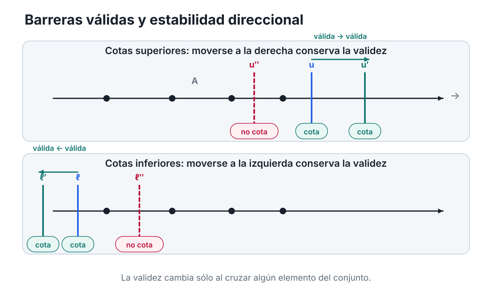
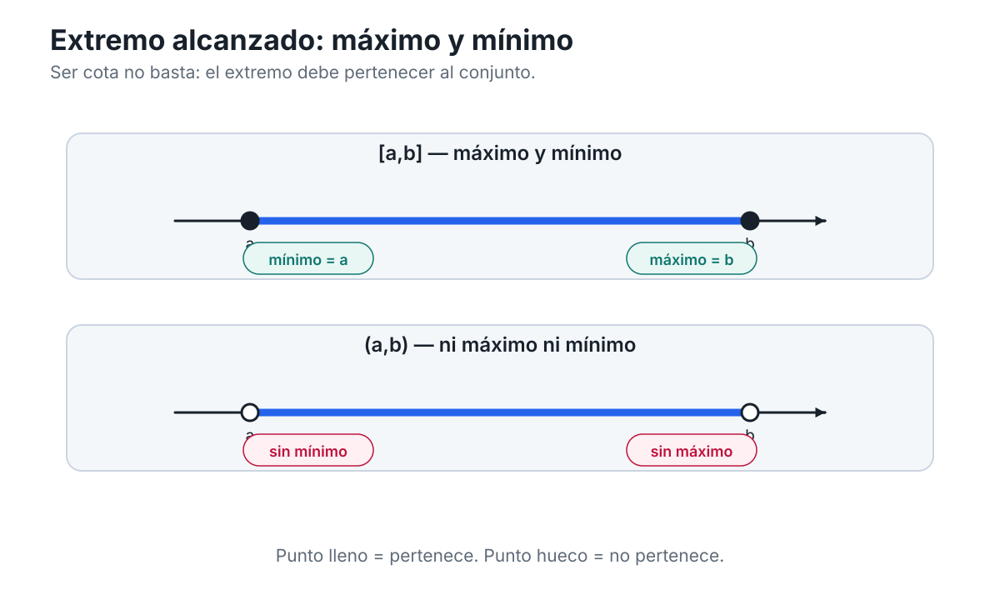
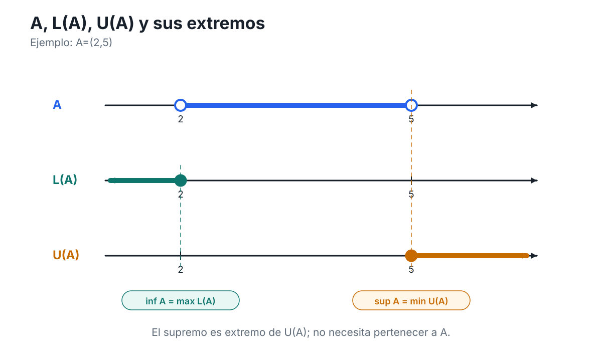
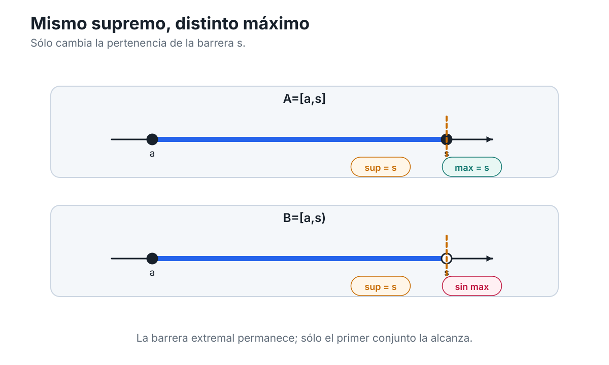
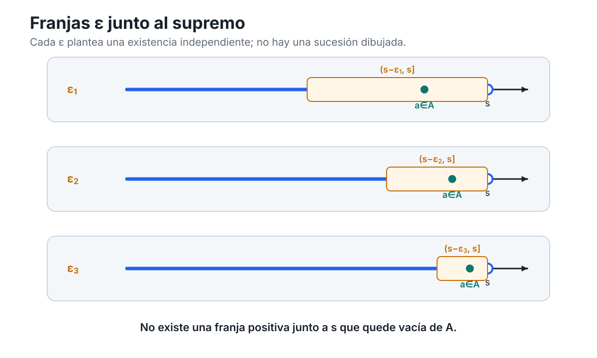
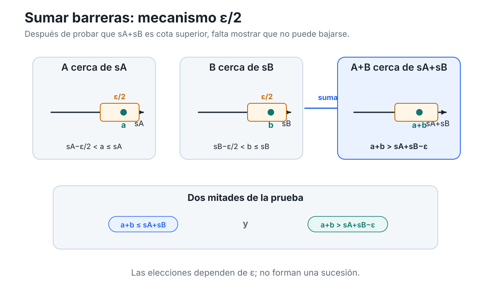
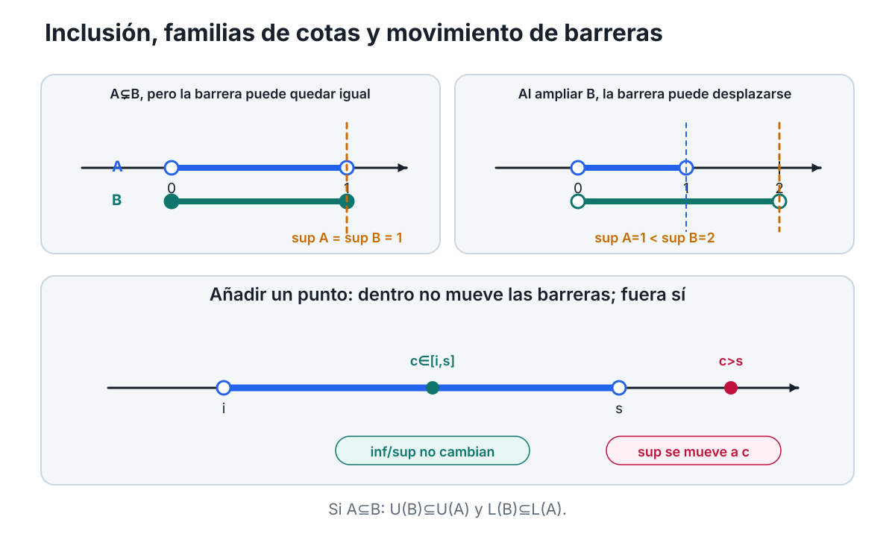
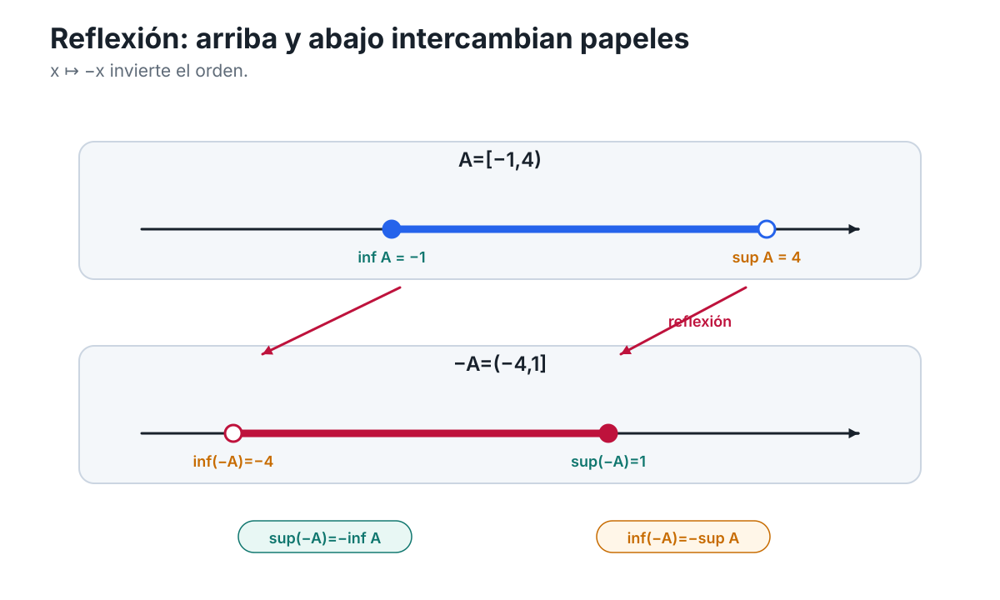
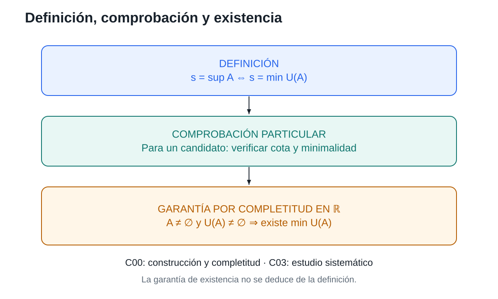
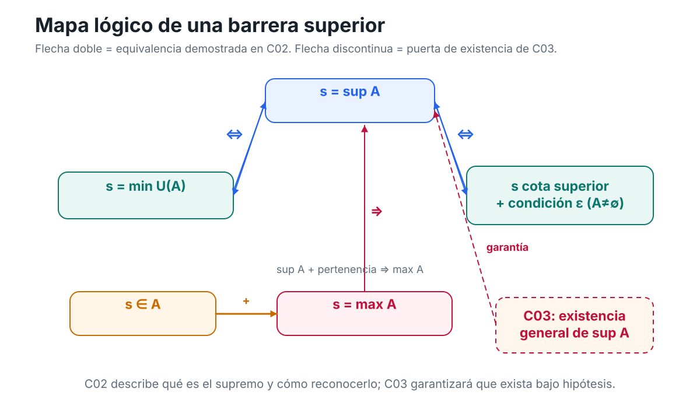

Capítulo 2 — Cotas, extremos y barreras
Índice del libro · Ejercicios de este capítulo
Un conjunto puede contener muchos números y, aun así, admitir una descripción sencilla de hasta dónde llegan. Para \(A=\{-2,0,1,3\}\), por ejemplo, sabemos que ningún elemento supera \(3\). También podríamos decir que ninguno supera \(5\), aunque ese dato deja más espacio entre el conjunto y la barrera elegida. Con el intervalo \((0,1)\) ocurre algo parecido: todos sus puntos quedan por debajo de \(1\), pero esta vez la barrera no pertenece al conjunto. La relación de orden permite describir ambas situaciones y separar dos preguntas que el dibujo de la recta tiende a confundir: cuál es la barrera más ajustada y si algún elemento del conjunto la alcanza.
En C00 construimos los números reales y establecimos su completitud. Aquí desarrollaremos el lenguaje que permite reconocer y comparar sus extremos, procurando identificar qué argumentos usan sólo el orden y cuáles necesitan aquella propiedad de existencia. Esta distinción resulta útil incluso cuando ya conocemos la completitud: nos permite transportar una prueba a otros sistemas ordenados y localizar el punto preciso en que ese transporte deja de funcionar.
2.1. Controlar un conjunto desde arriba y desde abajo
Para el conjunto finito de la apertura, tanto \(3\) como \(5\) controlan todos los elementos desde arriba. El número \(2\) falla, porque el elemento \(3\) lo sobrepasa. Lo que decide cada respuesta es una comparación con todos los elementos del conjunto. Dado \(A\subseteq\mathbb R\), llamamos cota superior de \(A\) a un número \(u\in\mathbb R\) tal que \(a\le u\) para todo \(a\in A\). Una cota inferior es un número \(l\in\mathbb R\) que satisface \(l\le a\) para todo \(a\in A\). Reuniremos esas cotas en los conjuntos
\[ U(A)=\{u\in\mathbb R:\forall a\in A,\ a\le u\}, \qquad L(A)=\{l\in\mathbb R:\forall a\in A,\ l\le a\}. \]
La definición permite que una cota pertenezca a \(A\), pero no lo exige. En el ejemplo finito, \(3\) pertenece a \(A\) y \(5\) no; ambos son cotas superiores. Para \(B=(0,1)\), los números \(0\) y \(1\) son, respectivamente, cota inferior y superior, aunque ninguno pertenece a \(B\). El control depende de las desigualdades y sigue siendo válido cuando el conjunto no incluye la barrera.
Una vez encontrada una cota superior, cualquier número mayor también sirve: si \(a\le u\) para todo \(a\in A\) y \(v\ge u\), la transitividad da \(a\le u\le v\). Del mismo modo, si \(l\) es cota inferior y \(m\le l\), entonces \(m\le l\le a\) para todo \(a\in A\), de modo que \(m\) también es cota inferior. Esto explica que las cotas del conjunto finito formen las semirrectas \(U(A)=[3,\infty)\) y \(L(A)=(-\infty,-2]\). No hay otras: una cota superior menor que \(3\) quedaría desmentida por el propio elemento \(3\), y una cota inferior mayor que \(-2\) por el elemento \(-2\).

Decimos que \(A\) está acotado superiormente si \(U(A)\ne\varnothing\), y acotado inferiormente si \(L(A)\ne\varnothing\). Cuando cumple ambas condiciones, está acotado. Para un conjunto no vacío, elegir una cota inferior \(l\) y una superior \(u\) nos da \(l\le a\le u\) para todo \(a\in A\); tomando uno de esos elementos comprobamos además que \(l\le u\). Por tanto, estar acotado equivale a quedar contenido en algún intervalo \([l,u]\). La equivalencia también vale para el vacío, que está contenido, por ejemplo, en \([0,0]\); examinaremos sus familias de cotas en §2.7.
La acotación no cuenta elementos. El intervalo \((0,1)\) es infinito y está acotado, mientras que \((0,\infty)\) sólo está acotado inferiormente. En efecto, para cualquier candidato \(u\) a cota superior, el número \(\max\{1,u+1\}\) es positivo y mayor que \(u\). Dualmente, \((-\infty,5)\) está acotado superiormente, pero el número \(\min\{4,l-1\}\) descarta cualquier candidato \(l\) a cota inferior. La recta \(\mathbb R\) no tiene cotas en ninguna dirección, pues a cada \(x\) le acompañan \(x+1\) y \(x-1\).
Estos argumentos emplean la negación de una afirmación universal. Para probar que \(u\) falla como cota superior basta encontrar un elemento que lo sobrepase; para descartar una cota inferior basta encontrar uno que quede por debajo. En símbolos,
\[ u\notin U(A)\ \Longleftrightarrow\ \exists a\in A:\ a>u, \qquad l\notin L(A)\ \Longleftrightarrow\ \exists a\in A:\ a<l. \]
Así, para \(A=(-2,4)\), los números \(4\) y \(5\) son cotas superiores, pero \(3\) queda descartado por \(7/2\in A\); los números \(-2\) y \(-3\) son cotas inferiores, pero \(0\) queda descartado por \(-1\in A\). No necesitamos revisar uno por uno todos los puntos para refutar una cota. Encontrar un testigo basta, mientras que verificarla exige un argumento que abarque el conjunto entero.
Ejercicios de la sección 2.1
Ejercicio 1. Barreras válidas e inválidas
Sea
\[ A=(-2,3). \]
Para cada uno de los números
\[ -2,\qquad 3,\qquad 0,\qquad 4, \]
decide si es:
- cota superior de \(A\);
- cota inferior de \(A\);
- ambas cosas;
- ninguna de las dos.
Justifica cada respuesta directamente desde las definiciones. En particular, explica por qué la pertenencia o no pertenencia del número a \(A\) no decide por sí sola si es cota.
Ver solución del ejercicio 1
Tenemos
\[ A=(-2,3). \]
El número \(-2\) es una cota inferior, porque todo \(a\in A\) satisface
\[ -2<a, \]
y por tanto también \(-2\le a\). No es cota superior, pues por ejemplo \(0\in A\) y
\[ 0>-2. \]
El número \(3\) es una cota superior, porque todo \(a\in A\) satisface
\[ a<3, \]
y por tanto \(a\le3\). No es cota inferior, pues \(0\in A\) y
\[ 0<3. \]
El número \(0\) no es cota superior ni inferior. Por ejemplo,
\[ 1\in A \quad\text{y}\quad 1>0, \]
de modo que \(0\) falla como cota superior; además,
\[ -1\in A \quad\text{y}\quad -1<0, \]
así que falla como cota inferior.
Finalmente, \(4\) es una cota superior, porque para todo \(a\in A\),
\[ a<3<4. \]
No es cota inferior, ya que \(0\in A\) y \(0<4\).
La clasificación es, por tanto:
- \(-2\): cota inferior solamente;
- \(3\): cota superior solamente;
- \(0\): ninguna;
- \(4\): cota superior solamente.
Obsérvese que \(-2\) y \(3\) no pertenecen a \(A\) y, sin embargo, sí son cotas. La definición exige una relación de orden con todos los elementos del conjunto, no pertenencia.
Ejercicio 2. Cuatro formas de estar acotado
Considera los conjuntos
\[ A=(-1,2), \]
\[ B=[3,\infty), \]
\[ C=(-\infty,5), \]
y
\[ D=\mathbb R. \]
Para cada conjunto:
- decide si está acotado superiormente;
- decide si está acotado inferiormente;
- decide si está acotado;
- cuando exista una cota en una dirección, exhibe una concreta;
- cuando no exista, explica cómo producir un elemento del conjunto que destruya cualquier candidato propuesto.
No uses máximo, mínimo, supremo ni ínfimo.
Ver solución del ejercicio 2
Para
\[ A=(-1,2), \]
el número \(2\) es cota superior y \(-1\) es cota inferior. Por tanto, \(A\) está acotado superior e inferiormente y, en consecuencia, está acotado.
Para
\[ B=[3,\infty), \]
el número \(3\) es cota inferior. También lo es cualquier número menor que \(3\). En cambio, \(B\) no está acotado superiormente. Dado cualquier candidato \(u\in\mathbb R\), podemos elegir
\[ b=\max\{3,u+1\}. \]
Entonces \(b\in B\) y \(b>u\), de modo que \(u\) no es cota superior. Así, \(B\) está acotado inferiormente, pero no superiormente.
Para
\[ C=(-\infty,5), \]
el número \(5\) es cota superior. No existe cota inferior: dado cualquier candidato \(l\in\mathbb R\), el número
\[ c=\min\{4,l-1\} \]
pertenece a \(C\) y satisface \(c<l\). Por tanto, \(l\) no puede ser cota inferior. Así, \(C\) está acotado superiormente, pero no inferiormente.
Finalmente,
\[ D=\mathbb R \]
no está acotado en ninguna dirección. Si \(u\in\mathbb R\) fuese un candidato a cota superior, entonces \(u+1\in\mathbb R\) y
\[ u+1>u. \]
Si \(l\in\mathbb R\) fuese un candidato a cota inferior, entonces \(l-1\in\mathbb R\) y
\[ l-1<l. \]
Por tanto, \(\mathbb R\) no posee cotas superiores ni inferiores.
En resumen:
- \(A\): acotado;
- \(B\): sólo acotado inferiormente;
- \(C\): sólo acotado superiormente;
- \(D\): no acotado en ninguna dirección.
Ejercicio 3. Del conjunto a todas sus cotas
Sea
\[ A=\{x\in\mathbb R:-4<x\le7\}. \]
Determina exactamente los conjuntos
\[ U(A) \]
y
\[ L(A). \]
Tu respuesta debe justificar las dos inclusiones en cada caso. Es decir, no basta con proponer una semirrecta: debes explicar por qué todos sus elementos son cotas y por qué ningún número exterior a ella puede serlo.
Ver solución del ejercicio 3
El conjunto puede escribirse como
\[ A=(-4,7]. \]
Afirmamos primero que
\[ U(A)=[7,\infty). \]
Si \(u\ge7\), entonces para todo \(a\in A\) tenemos
\[ a\le7\le u, \]
por lo que \(u\) es cota superior. Así,
\[ [7,\infty)\subseteq U(A). \]
Recíprocamente, si \(u<7\), el propio número \(7\) pertenece a \(A\) y satisface
\[ 7>u. \]
Por tanto, \(u\) no puede ser cota superior. De aquí,
\[ U(A)\subseteq[7,\infty). \]
Las dos inclusiones dan
\[ \boxed{U(A)=[7,\infty).} \]
Ahora afirmamos que
\[ L(A)=(-\infty,-4]. \]
Si \(l\le-4\), entonces todo \(a\in A\) satisface
\[ l\le-4<a, \]
así que \(l\) es cota inferior. Por tanto,
\[ (-\infty,-4]\subseteq L(A). \]
Para la inclusión contraria, sea \(l>-4\). Necesitamos encontrar un elemento de \(A\) menor que \(l\).
Si \(l\le7\), tomemos
\[ a=\frac{l-4}{2}. \]
Como \(l>-4\),
\[ -4<\frac{l-4}{2}<l, \]
y además, puesto que \(l\le7\),
\[ a=\frac{l-4}{2}\le\frac32<7. \]
Por tanto \(a\in A\) y \(a<l\), de modo que \(l\) no es cota inferior.
Si \(l>7\), basta tomar \(a=0\), pues \(0\in A\) y \(0<l\).
Así, ningún \(l>-4\) pertenece a \(L(A)\), y obtenemos
\[ \boxed{L(A)=(-\infty,-4].} \]
El extremo \(-4\) no pertenece a \(A\), pero sí es cota inferior. Esto vuelve a mostrar que la condición de ser cota no exige pertenencia.
Ejercicio 4. Mover una barrera en la dirección equivocada
Un estudiante afirma:
Si \(u\) es una cota superior de \(A\) y \(v<u\), entonces \(v\) ya no puede ser una cota superior de \(A\).
- Decide si la afirmación es correcta.
- Si es falsa, construye un contraejemplo explícito.
- Formula la afirmación correcta sobre lo que ocurre cuando una cota superior se desplaza hacia la derecha.
- Escribe y justifica la versión dual para cotas inferiores.
El diagnóstico debe distinguir cuidadosamente lo que se deduce de que \(u\) sea una cota superior de lo que no se deduce.
Ver solución del ejercicio 4
La afirmación es falsa.
Tomemos, por ejemplo,
\[ A=(0,1). \]
El número
\[ u=5 \]
es una cota superior de \(A\). Si elegimos
\[ v=2, \]
entonces \(v<u\), pero \(2\) sigue siendo cota superior, porque todo \(a\in(0,1)\) satisface
\[ a<1<2. \]
Por tanto, de
\[ u\in U(A) \quad\text{y}\quad v<u \]
no se puede concluir que \(v\notin U(A)\).
El error consiste en tratar una cota superior cualquiera como si fuese una frontera que ya no pudiera desplazarse hacia la izquierda. La definición de cota superior no dice eso.
La afirmación correcta es:
si \(u\) es cota superior de \(A\) y \(v\ge u\), entonces \(v\) también es cota superior de \(A\).
En efecto, para todo \(a\in A\),
\[ a\le u\le v, \]
y por transitividad,
\[ a\le v. \]
Dualmente, si \(l\) es cota inferior de \(A\) y \(m\le l\), entonces \(m\) también es cota inferior. Para todo \(a\in A\),
\[ m\le l\le a, \]
de donde
\[ m\le a. \]
La dirección importa: una cota superior puede desplazarse con seguridad hacia la derecha; una cota inferior, hacia la izquierda. En la dirección contraria puede seguir siendo válida o puede dejar de serlo, y la información disponible no basta para decidirlo.
Ejercicio 5. Trasladar un conjunto traslada sus barreras
Sea \(A\subseteq\mathbb R\) y sea \(c\in\mathbb R\). Define
\[ A+c=\{a+c:a\in A\}. \]
Para cualquier conjunto \(S\subseteq\mathbb R\), usa también la notación
\[ S+c=\{s+c:s\in S\}. \]
Demuestra, usando sólo la definición de cota, que
\[ U(A+c)=U(A)+c. \]
Demuestra de manera dual que
\[ L(A+c)=L(A)+c. \]
Aplica ambas identidades a
\[ A=(-2,5] \]
y \(c=3\), determinando explícitamente \(U(A)\), \(L(A)\), \(U(A+3)\) y \(L(A+3)\).
El objetivo es identificar qué parte del lenguaje de cotas cambia y qué parte conserva su estructura cuando trasladamos todo el conjunto.
Ver solución del ejercicio 5
Una traslación suma la misma constante a todos los elementos del conjunto y a la barrera. Como sumar la misma cantidad a ambos lados de una desigualdad preserva el orden, esperamos que la familia completa de cotas se traslade rígidamente.
Demostremos primero que
\[ U(A+c)=U(A)+c. \]
Sea \(u\in U(A)\). Entonces
\[ a\le u \qquad \text{para todo }a\in A. \]
Al sumar \(c\),
\[ a+c\le u+c \qquad \text{para todo }a\in A. \]
Pero los números \(a+c\) son precisamente los elementos de \(A+c\). Por tanto,
\[ u+c\in U(A+c). \]
Esto demuestra
\[ U(A)+c\subseteq U(A+c). \]
Para la inclusión contraria, sea \(v\in U(A+c)\). Entonces
\[ a+c\le v \qquad \text{para todo }a\in A. \]
Restando \(c\),
\[ a\le v-c \qquad \text{para todo }a\in A, \]
de modo que
\[ v-c\in U(A). \]
Así, \(v=(v-c)+c\in U(A)+c\). Por tanto,
\[ U(A+c)\subseteq U(A)+c. \]
Concluimos que
\[ \boxed{U(A+c)=U(A)+c.} \]
El argumento inferior es dual. Si \(l\in L(A)\), entonces
\[ l\le a \qquad \text{para todo }a\in A. \]
Sumando \(c\),
\[ l+c\le a+c, \]
por lo que \(l+c\in L(A+c)\). Esto da una inclusión. Recíprocamente, si \(m\in L(A+c)\), entonces
\[ m\le a+c \]
para todo \(a\in A\), y al restar \(c\) obtenemos
\[ m-c\le a. \]
Así, \(m-c\in L(A)\) y \(m\in L(A)+c\). En consecuencia,
\[ \boxed{L(A+c)=L(A)+c.} \]
Apliquemos ahora estas identidades a
\[ A=(-2,5]. \]
Como \(5\in A\) y todos los elementos de \(A\) son menores o iguales que \(5\),
\[ U(A)=[5,\infty). \]
Además,
\[ L(A)=(-\infty,-2]. \]
Aunque \(-2\notin A\), sigue siendo cota inferior.
Con \(c=3\),
\[ A+3=(1,8]. \]
Por las identidades demostradas,
\[ U(A+3)=U(A)+3=[8,\infty) \]
y
\[ L(A+3)=L(A)+3=(-\infty,1]. \]
La estructura no cambia: las familias de cotas siguen siendo semirrectas del mismo tipo; sólo se desplazan exactamente la misma cantidad que el conjunto.
2.2. Extremos alcanzados: máximo y mínimo
El número \(3\) tiene una relación con \(\{-2,0,1,3\}\) que no comparte la cota superior \(5\): es uno de sus elementos. Llamamos máximo de \(A\) a un número \(M\) que pertenece a \(A\) y satisface \(a\le M\) para todo \(a\in A\). Dualmente, un mínimo es un número \(m\in A\) tal que \(m\le a\) para todo \(a\in A\). Las dos condiciones de cada definición se reúnen en
\[ M=\max A\ \Longleftrightarrow\ M\in A\cap U(A), \qquad m=\min A\ \Longleftrightarrow\ m\in A\cap L(A). \]
En nuestro ejemplo, \(\max A=3\) y \(\min A=-2\). La cota \(5\) no es máximo porque no pertenece a \(A\), y el elemento \(1\) tampoco lo es porque \(3>1\). Pertenecer y ser cota son exigencias distintas; un extremo alcanzado las cumple simultáneamente. Para \(\{-3,-1,2,7\}\), las mismas comprobaciones dan mínimo \(-3\) y máximo \(7\).
Máximo y mínimo, cuando existen, son únicos. Si \(M\) y \(N\) fueran máximos de un mismo conjunto, de \(M\in A\) y de que \(N\) es cota superior obtendríamos \(M\le N\); intercambiando sus papeles obtendríamos \(N\le M\). La antisimetría obliga a que \(M=N\). Para dos mínimos \(m,n\), las condiciones de cota inferior dan \(m\le n\) y \(n\le m\), de nuevo con igualdad. Esto justifica que hablemos de el máximo y el mínimo, sin afirmar todavía que todo conjunto los tenga.

Para \([0,1]\), los extremos son \(0\) y \(1\). El intervalo \((0,1)\) tiene las mismas cotas \(0\) y \(1\), pero carece de mínimo y de máximo. Podemos demostrarlo sin limitarnos a observar que los extremos dibujados están abiertos. Dado cualquier \(x\in(0,1)\), el número \((x+1)/2\) sigue en \((0,1)\) y es mayor que \(x\); por tanto, \(x\) no es máximo. El número \(x/2\) sigue en el intervalo y es menor que \(x\), por lo que tampoco puede ser mínimo. Como el argumento sirve para cualquier elemento, quedan descartados todos los candidatos.
El punto medio realiza la misma tarea en un intervalo cualquiera con \(a<b\). Si \(x<b\), entonces \(x<(x+b)/2<b\); si \(x>a\), entonces \(a<(a+x)/2<x\). Por eso \([a,b]\) tiene ambos extremos alcanzados, \([a,b)\) tiene mínimo \(a\) y carece de máximo, \((a,b]\) tiene máximo \(b\) y carece de mínimo, y \((a,b)\) carece de ambos. En particular, \([-2,5)\) tiene mínimo \(-2\) y ningún máximo, mientras que \((2,4)\) no tiene máximo porque a cada \(x\) le sigue el punto \((x+4)/2\) del mismo intervalo.
En estos ejemplos, la acotación permanece cuando retiramos un extremo, aunque puede desaparecer el máximo o el mínimo correspondiente. Necesitamos una noción que describa la posición de la barrera sin exigir que el conjunto la contenga.
Ejercicios de la sección 2.2
Ejercicio 6. Cota, pertenencia y extremo
Sea
\[ A=(-3,2]\cup\{5\}. \]
Para cada uno de los números
\[ -3,\qquad 2,\qquad 5,\qquad 6, \]
decide:
- si pertenece a \(A\);
- si es cota superior de \(A\);
- si es cota inferior de \(A\);
- si es máximo o mínimo de \(A\), cuando corresponda.
Justifica cada clasificación usando las dos condiciones de las definiciones de máximo y mínimo. Al final, indica si \(A\) posee máximo y si posee mínimo.
Ver solución del ejercicio 6
Tenemos
\[ A=(-3,2]\cup\{5\}. \]
El número \(-3\) no pertenece a \(A\), pero es cota inferior: todo \(a\in A\) satisface
\[ -3<a \]
y, por tanto, \(-3\le a\). Como no pertenece al conjunto, no puede ser mínimo.
El número \(2\) sí pertenece a \(A\). También cumple \(-3<2\), pero no es cota superior porque
\[ 5\in A \qquad\text{y}\qquad 5>2. \]
Tampoco es cota inferior, pues por ejemplo \(0\in A\) y \(0<2\). Por tanto, \(2\) no es máximo ni mínimo.
El número \(5\) pertenece a \(A\) y domina a todos sus elementos. En efecto, los elementos de \((-3,2]\) son menores o iguales que \(2<5\), y el único punto adicional es el propio \(5\). Así,
\[ 5\in A \qquad\text{y}\qquad \forall a\in A,\ a\le5. \]
Por definición,
\[ \boxed{\max A=5}. \]
El número \(6\) es cota superior de \(A\), porque todo \(a\in A\) satisface \(a\le5<6\), pero
\[ 6\notin A. \]
Por tanto, \(6\) no es máximo.
Finalmente, \(A\) no tiene mínimo. El único candidato natural a barrera inferior extrema sería \(-3\), pero \(-3\notin A\). Más directamente, dado cualquier \(x\in(-3,2]\subseteq A\), el número
\[ y=\frac{x-3}{2} \]
satisface
\[ -3<y<x, \]
de modo que \(y\in A\) y \(x\) no puede ser mínimo. El punto \(5\) tampoco puede serlo porque hay elementos menores en \(A\).
En resumen:
- \(\max A=5\);
- \(A\) no tiene mínimo;
- una cota puede no pertenecer al conjunto;
- pertenecer al conjunto no basta para ser máximo o mínimo.
Ejercicio 7. Quitar un extremo cambia la respuesta
Parte del intervalo
\[ A=[-2,3]. \]
Define
\[ B=A\setminus\{3\},\qquad C=A\setminus\{-2\},\qquad D=A\setminus\{-2,3\}. \]
Para cada uno de los cuatro conjuntos \(A,B,C,D\):
- decide si existe máximo;
- decide si existe mínimo;
- cuando exista, identifícalo;
- cuando no exista, demuestra directamente que ningún elemento del conjunto puede desempeñar ese papel.
No uses supremo ni ínfimo. El objetivo es aislar exactamente qué efecto tiene eliminar uno o ambos extremos alcanzados.
Ver solución del ejercicio 7
Partimos de
\[ A=[-2,3]. \]
Como ambos extremos pertenecen al conjunto,
\[ \boxed{\min A=-2,\qquad \max A=3}. \]
Ahora,
\[ B=A\setminus\{3\}=[-2,3). \]
El número \(-2\) sigue perteneciendo a \(B\) y está por debajo de todos sus elementos, así que
\[ \boxed{\min B=-2}. \]
En cambio, \(B\) no tiene máximo. Si \(x\in B\), entonces \(x<3\) y el número
\[ y=\frac{x+3}{2} \]
satisface
\[ x<y<3. \]
Por tanto \(y\in B\) y es mayor que \(x\). Ningún elemento de \(B\) puede ser máximo.
De manera dual,
\[ C=A\setminus\{-2\}=(-2,3]. \]
El número \(3\) pertenece a \(C\) y domina a todos sus elementos, de modo que
\[ \boxed{\max C=3}. \]
Pero \(C\) no tiene mínimo. Dado \(x\in C\), tenemos \(x>-2\). Si tomamos
\[ y=\frac{x-2}{2}, \]
entonces
\[ -2<y<x. \]
Así, \(y\in C\) y ningún \(x\in C\) puede ser mínimo.
Finalmente,
\[ D=A\setminus\{-2,3\}=(-2,3). \]
El argumento usado para \(B\) muestra que \(D\) no tiene máximo: para cada \(x\in D\), \((x+3)/2\) sigue en \(D\) y es mayor que \(x\).
El argumento usado para \(C\) muestra que \(D\) no tiene mínimo: para cada \(x\in D\), \((x-2)/2\) sigue en \(D\) y es menor que \(x\).
Por tanto:
\[ \begin{array}{c|c|c} \text{conjunto} & \text{mínimo} & \text{máximo}\\ \hline A=[-2,3] & -2 & 3\\ B=[-2,3) & -2 & \text{no existe}\\ C=(-2,3] & \text{no existe} & 3\\ D=(-2,3) & \text{no existe} & \text{no existe} \end{array} \]
Eliminar un extremo alcanzado puede destruir exactamente el extremo correspondiente sin alterar por ello la existencia del otro.
Ejercicio 8. La intersección que contiene al máximo
Sea \(A\subseteq\mathbb R\).
- Demuestra que, si \[ A\cap U(A)\ne\varnothing, \] entonces todo elemento de \(A\cap U(A)\) es un máximo de \(A\).
- Demuestra que \(A\cap U(A)\) no puede contener dos elementos distintos.
- Concluye que, si \(A\cap U(A)\ne\varnothing\), entonces existe un único número \(M\) tal que \[ A\cap U(A)=\{M\}, \] y ese número es \(\max A\).
- Formula y demuestra el resultado dual usando \(A\cap L(A)\) y el mínimo.
La prueba debe salir exclusivamente de pertenencia, definición de cota y antisimetría del orden.
Ver solución del ejercicio 8
Supongamos que
\[ A\cap U(A)\ne\varnothing. \]
Sea
\[ M\in A\cap U(A). \]
Entonces se cumplen simultáneamente
\[ M\in A \]
y
\[ M\in U(A). \]
La segunda condición significa que
\[ a\le M \qquad \text{para todo }a\in A. \]
Por tanto, \(M\) pertenece a \(A\) y es cota superior de \(A\). Ésas son exactamente las dos condiciones que definen al máximo. Luego
\[ M=\max A. \]
Veamos ahora que la intersección no puede contener dos elementos distintos. Supongamos que
\[ M,N\in A\cap U(A). \]
Como \(M\in U(A)\) y \(N\in A\),
\[ N\le M. \]
Como \(N\in U(A)\) y \(M\in A\),
\[ M\le N. \]
Por antisimetría,
\[ M=N. \]
Así, \(A\cap U(A)\) contiene a lo sumo un elemento. Como por hipótesis es no vacío, contiene exactamente uno. En consecuencia,
\[ \boxed{A\cap U(A)=\{\max A\}}. \]
El argumento inferior es dual. Si
\[ m\in A\cap L(A), \]
entonces \(m\in A\) y \(m\) es cota inferior, de modo que
\[ m=\min A. \]
Si \(m,n\in A\cap L(A)\), como \(m\in L(A)\) y \(n\in A\) tenemos \(m\le n\), mientras que \(n\in L(A)\) y \(m\in A\) implican \(n\le m\). Por antisimetría,
\[ m=n. \]
Por tanto, si \(A\cap L(A)\) es no vacío,
\[ \boxed{A\cap L(A)=\{\min A\}}. \]
La unicidad de máximo y mínimo aparece aquí como consecuencia directa de la interacción entre pertenencia, cota y antisimetría.
Ejercicio 9. Dos conjuntos no vacíos no tienen por qué encontrarse
Un estudiante argumenta:
Si \(A\) es no vacío y está acotado superiormente, entonces \(A\ne\varnothing\) y \(U(A)\ne\varnothing\). Por tanto, \(A\cap U(A)\ne\varnothing\), así que \(A\) tiene máximo.
Diagnostica el razonamiento.
- Identifica con precisión el paso lógico inválido.
- Usa \[ A=(-\infty,0) \] para calcular \(U(A)\) directamente.
- Determina \(A\cap U(A)\).
- Explica por qué este ejemplo destruye la conclusión del estudiante sin negar que \(A\) esté acotado superiormente.
No uses supremo para el diagnóstico.
Ver solución del ejercicio 9
El paso inválido es
\[ A\ne\varnothing,\qquad U(A)\ne\varnothing \quad\Longrightarrow\quad A\cap U(A)\ne\varnothing. \]
Dos subconjuntos no vacíos de \(\mathbb R\) pueden ser disjuntos. La no vaciedad de cada uno no garantiza que compartan elementos.
Consideremos
\[ A=(-\infty,0). \]
El conjunto es no vacío y está acotado superiormente; por ejemplo, \(0\) es una cota superior.
Calculemos \(U(A)\). Si \(u\ge0\), entonces todo \(a<0\) satisface
\[ a<0\le u, \]
así que \(u\) es cota superior. Por tanto,
\[ [0,\infty)\subseteq U(A). \]
Recíprocamente, si \(u<0\), el número
\[ a=\frac{u}{2} \]
satisface
\[ u<a<0. \]
Luego \(a\in A\) y \(a>u\), de modo que \(u\) no es cota superior. Por consiguiente,
\[ \boxed{U(A)=[0,\infty)}. \]
Ahora
\[ A=(-\infty,0) \qquad\text{y}\qquad U(A)=[0,\infty), \]
por lo que
\[ \boxed{A\cap U(A)=\varnothing}. \]
Así, \(A\) está acotado superiormente pero no tiene máximo. El ejemplo no contradice ninguna definición: simplemente muestra que
tener alguna cota superior no obliga a que una de esas cotas pertenezca al conjunto.
Ésa es precisamente la información adicional que exigiría un máximo.
Ejercicio 10. Qué hacen las transformaciones afines con máximo y mínimo
Sea \(A\subseteq\mathbb R\) un conjunto que posee máximo \(M\) y mínimo \(m\). Para \(\alpha,\beta\in\mathbb R\), define
\[ T(A)=\{\alpha a+\beta:a\in A\}. \]
Determina y demuestra, usando las definiciones de máximo y mínimo, cuáles son \(\max T(A)\) y \(\min T(A)\) en los tres casos:
- \(\alpha>0\);
- \(\alpha<0\);
- \(\alpha=0\).
Tu demostración debe explicar por qué el signo de \(\alpha\) decide si los papeles de máximo y mínimo se conservan o se intercambian. No uses supremo ni ínfimo.
Ver solución del ejercicio 10
Un máximo o un mínimo combina dos datos: el candidato debe pertenecer al conjunto transformado y debe dominar —o quedar por debajo de— todos sus elementos. La pertenencia se obtiene transformando \(M\) o \(m\); la desigualdad depende del signo de \(\alpha\).
Sabemos que
\[ m\le a\le M \qquad \text{para todo }a\in A, \]
con \(m,M\in A\).
Caso 1: \(\alpha>0\)
Multiplicar por \(\alpha\) preserva el orden:
\[ \alpha m\le\alpha a\le\alpha M. \]
Al sumar \(\beta\),
\[ \alpha m+\beta \le \alpha a+\beta \le \alpha M+\beta. \]
Todo elemento de \(T(A)\) tiene la forma \(\alpha a+\beta\). Además, como \(m,M\in A\),
\[ \alpha m+\beta\in T(A), \qquad \alpha M+\beta\in T(A). \]
Por definición,
\[ \boxed{ \min T(A)=\alpha m+\beta, \qquad \max T(A)=\alpha M+\beta }. \]
Caso 2: \(\alpha<0\)
Multiplicar por un número negativo invierte el orden:
\[ \alpha M\le\alpha a\le\alpha m. \]
Después de sumar \(\beta\),
\[ \alpha M+\beta \le \alpha a+\beta \le \alpha m+\beta. \]
Los dos extremos transformados pertenecen a \(T(A)\). Por tanto,
\[ \boxed{ \min T(A)=\alpha M+\beta, \qquad \max T(A)=\alpha m+\beta }. \]
El máximo original se convierte en mínimo y el mínimo original se convierte en máximo porque la multiplicación por \(\alpha<0\) invierte el orden.
Caso 3: \(\alpha=0\)
Entonces, para todo \(a\in A\),
\[ \alpha a+\beta=\beta. \]
Así,
\[ T(A)=\{\beta\}. \]
El único elemento es simultáneamente mínimo y máximo:
\[ \boxed{ \min T(A)=\max T(A)=\beta }. \]
En conjunto, la clasificación es:
\[ \begin{array}{c|c|c} & \min T(A) & \max T(A)\\ \hline \alpha>0 & \alpha m+\beta & \alpha M+\beta\\ \alpha<0 & \alpha M+\beta & \alpha m+\beta\\ \alpha=0 & \beta & \beta \end{array} \]
No hemos usado ninguna noción posterior. Todo depende de pertenencia al conjunto transformado y de cómo una transformación afín afecta las desigualdades que definen máximo y mínimo.
2.3. La mejor barrera: supremo e ínfimo
Entre las cotas superiores de \((0,1)\), el número \(1\) tiene una propiedad que no comparte \(2\): ninguna cota superior es menor que él. Esta propiedad define el supremo. Un número \(s\) es el supremo de \(A\) si es cota superior de \(A\) y satisface \(s\le u\) para toda cota superior \(u\) de \(A\). El ínfimo es una cota inferior \(i\) tal que \(l\le i\) para toda cota inferior \(l\) de \(A\). Así,
\[ s=\sup A\ \Longleftrightarrow\ s=\min U(A), \qquad i=\inf A\ \Longleftrightarrow\ i=\max L(A). \]
La minimalidad se refiere a \(U(A)\), y la maximalidad a \(L(A)\). Ninguna de esas condiciones exige que \(s\) o \(i\) pertenezcan al conjunto original. Para comprobar un supremo hay que atender a sus dos obligaciones: controlar a \(A\) desde arriba y quedar por debajo de todas las demás cotas superiores.
Verifiquémoslas para \((0,1)\). Todo \(u\ge1\) es cota superior, porque \(a<1\le u\) para todo \(a\in(0,1)\). Si \(u<1\), buscamos un elemento del intervalo mayor que \(u\). Cuando \(u<0\) sirve \(1/2\); cuando \(0\le u<1\) sirve \((u+1)/2\), que está entre \(u\) y \(1\). Hemos probado que \(U((0,1))=[1,\infty)\) y, por tanto, que \(\sup(0,1)=1\).
Para el lado inferior, todo \(l\le0\) es cota inferior. Si \(l>0\), entonces \(l/2\) descarta la cota cuando \(l\le1\), mientras que \(1/2\) la descarta cuando \(l>1\). En ambos casos encontramos un punto de \((0,1)\) menor que \(l\). Así, \(L((0,1))=(-\infty,0]\) y \(\inf(0,1)=0\). La prueba se obtiene de las definiciones y de la posibilidad de tomar puntos medios; la completitud no interviene en esta identificación particular.

La forma de esas familias de cotas es general. Si \(s=\sup A\), entonces toda cota superior \(u\) satisface \(s\le u\), de modo que \(U(A)\subseteq[s,\infty)\). Recíprocamente, como \(s\) es cota superior, cualquier \(u\ge s\) también lo es por transitividad. Dualmente, cuando \(i=\inf A\), las cotas inferiores son exactamente los números menores o iguales que \(i\). Obtenemos
\[ U(A)=[s,\infty),\qquad L(A)=(-\infty,i], \]
cada igualdad bajo la hipótesis de existencia de su extremo correspondiente. Para \(A=(2,5)\) resultan \(U(A)=[5,\infty)\) y \(L(A)=(-\infty,2]\), con supremo \(5\) e ínfimo \(2\). Para \(B=\{-4,1,7\}\) resultan \(U(B)=[7,\infty)\) y \(L(B)=(-\infty,-4]\), cuyos extremos sí pertenecen a \(B\).
También aquí hay unicidad. Si \(s,t\) fueran supremos de \(A\), cada uno sería cota superior y la minimalidad del otro daría \(s\le t\) y \(t\le s\); por antisimetría, \(s=t\). Si \(i,j\) fueran ínfimos, cada uno sería cota inferior y la maximalidad del otro daría \(j\le i\) e \(i\le j\), luego \(i=j\). La notación \(\sup A\) o \(\inf A\) designa, pues, un número determinado cuando hemos asegurado su existencia. Puede asegurarse mediante una comprobación como las anteriores o mediante la completitud de \(\mathbb R\), con sus hipótesis de no vaciedad y acotación en la dirección apropiada. Son justificaciones diferentes y conviene reconocer cuál usamos.
Ejercicios de la sección 2.3
Ejercicio 11. Cota no significa barrera extremal
Sea
\[ A=(-2,3)\cup\{6\}. \]
Analiza los seis números
\[ 8,\qquad 6,\qquad 5,\qquad -4,\qquad -2,\qquad -1. \]
- Decide cuáles son cotas superiores de \(A\).
- Entre las cotas superiores propuestas, determina si alguna es \(\sup A\).
- Decide cuáles son cotas inferiores de \(A\).
- Entre las cotas inferiores propuestas, determina si alguna es \(\inf A\).
- Para cada candidato rechazado como supremo o ínfimo, indica exactamente qué condición de la definición falla.
No basta con identificar una cota: debes distinguir entre controlar al conjunto y ser la barrera extremal.
Ver solución del ejercicio 11
Tenemos
\[ A=(-2,3)\cup\{6\}. \]
Todo elemento de \(A\) es menor o igual que \(6\), y \(6\in A\). Por tanto, cualquier número \(u\ge6\) es cota superior. En particular,
\[ 6,8\in U(A). \]
En cambio, \(5\) no es cota superior, porque
\[ 6\in A \qquad\text{y}\qquad 6>5. \]
Así, entre los tres candidatos superiores:
- \(8\) es cota superior, pero no es supremo, porque existe una cota superior menor, a saber \(6\);
- \(6\) es cota superior y además toda cota superior \(u\) debe satisfacer \(6\le u\), pues \(6\in A\);
- \(5\) ni siquiera es cota superior.
Luego
\[ \boxed{\sup A=6}. \]
Para las cotas inferiores, todo elemento de \(A\) es estrictamente mayor que \(-2\). Por tanto, cualquier \(l\le-2\) es cota inferior; en particular,
\[ -4,-2\in L(A). \]
El número \(-1\) no es cota inferior. Por ejemplo,
\[ -\frac32\in(-2,3)\subseteq A \]
y
\[ -\frac32<-1. \]
Entre los candidatos inferiores:
- \(-4\) es cota inferior, pero no es ínfimo, porque existe una cota inferior mayor, a saber \(-2\);
- \(-2\) es cota inferior;
- todo \(l>-2\) deja de ser cota inferior, pues existe un elemento de \((-2,3)\) situado entre \(-2\) y \(l\) si \(l\le3\), y si \(l>3\) basta elegir, por ejemplo, \(0\in A\).
Por tanto,
\[ \boxed{\inf A=-2}. \]
El punto decisivo es que una cota cualquiera sólo satisface la condición de control. Para ser supremo debe ser, además, la menor de todas las cotas superiores; para ser ínfimo, la mayor de todas las cotas inferiores.
Ejercicio 12. Distintos conjuntos, las mismas familias de cotas
Supón que un conjunto no vacío \(A\subseteq\mathbb R\) satisface
\[ U(A)=[4,\infty) \]
y
\[ L(A)=(-\infty,-2]. \]
- Determina \(\sup A\) e \(\inf A\) directamente a partir de estas dos familias de cotas.
- Construye al menos tres conjuntos distintos \(A_1,A_2,A_3\subseteq\mathbb R\) que tengan exactamente esas mismas familias \(U(A_k)\) y \(L(A_k)\).
- Haz que, entre tus ejemplos, aparezcan distintas decisiones de pertenencia de \(-2\) y \(4\).
- Explica qué información queda determinada por \(U(A)\) y \(L(A)\) y qué información sobre la pertenencia de las barreras no queda determinada.
No uses todavía la relación entre supremo y máximo.
Ver solución del ejercicio 12
Sabemos que
\[ U(A)=[4,\infty). \]
El mínimo de \(U(A)\) es \(4\). Por la caracterización estructural del supremo como extremo del conjunto de cotas,
\[ \boxed{\sup A=4}. \]
Asimismo,
\[ L(A)=(-\infty,-2] \]
tiene máximo \(-2\), de modo que
\[ \boxed{\inf A=-2}. \]
Ahora construyamos conjuntos distintos con las mismas familias de cotas. Por ejemplo,
\[ A_1=(-2,4), \]
\[ A_2=[-2,4], \]
y
\[ A_3=(-2,4]. \]
También podríamos usar
\[ A_4=[-2,4). \]
Verifiquemos la estructura común. En cualquiera de estos conjuntos, todo elemento satisface
\[ -2\le a\le4. \]
Así, todo \(u\ge4\) es cota superior y todo \(l\le-2\) es cota inferior.
Para \(u<4\), el punto \((\max\{-2,u\}+4)/2\) pertenece a los cuatro intervalos y es mayor que \(u\). Para \(l>-2\), el punto \((-2+\min\{l,4\})/2\) pertenece a los cuatro y es menor que \(l\). Estos testigos descartan todas las cotas exteriores propuestas.
Por tanto, para cada uno de los cuatro ejemplos,
\[ U(A_k)=[4,\infty) \]
y
\[ L(A_k)=(-\infty,-2]. \]
Sin embargo, la pertenencia de las barreras cambia:
- en \(A_1\), ni \(-2\) ni \(4\) pertenecen;
- en \(A_2\), ambos pertenecen;
- en \(A_3\), \(4\) pertenece y \(-2\) no;
- en \(A_4\), \(-2\) pertenece y \(4\) no.
Así, las familias \(U(A)\) y \(L(A)\) determinan la posición de las barreras extremales y, por tanto, el supremo y el ínfimo. No determinan por sí solas si esas barreras pertenecen al conjunto original.
Ejercicio 13. Por qué no puede haber dos supremos
Sea \(A\subseteq\mathbb R\).
- Supón que \(s\) y \(t\) satisfacen ambos la definición de supremo de \(A\). Demuestra, sin citar un teorema de unicidad ya establecido, que \[ s=t. \]
- Identifica con precisión dónde utilizas que cada candidato es una cota superior y dónde utilizas que es la menor de las cotas superiores.
- Repite el argumento para dos candidatos \(i\) y \(j\) que satisfagan ambos la definición de ínfimo.
La prueba debe reducir la unicidad a dos desigualdades opuestas y a la antisimetría del orden.
Ver solución del ejercicio 13
Supongamos que \(s\) y \(t\) son ambos supremos de \(A\).
Como \(t\) es supremo, en particular es una cota superior de \(A\). Como \(s\) es la menor cota superior, debe satisfacer
\[ s\le t. \]
Simétricamente, \(s\) es una cota superior de \(A\) y \(t\) es la menor cota superior. Por tanto,
\[ t\le s. \]
Las dos desigualdades dan
\[ s\le t \qquad\text{y}\qquad t\le s. \]
Por antisimetría del orden,
\[ \boxed{s=t}. \]
La prueba usa las dos piezas de la definición de manera distinta:
- necesitamos que cada candidato sea cota superior para que el otro pueda compararse con él;
- necesitamos la minimalidad para obtener cada desigualdad.
Para el ínfimo, supongamos que \(i\) y \(j\) satisfacen ambos la definición. Como \(j\) es cota inferior e \(i\) es la mayor cota inferior,
\[ j\le i. \]
Como \(i\) es cota inferior y \(j\) es la mayor de ellas,
\[ i\le j. \]
Por antisimetría,
\[ \boxed{i=j}. \]
Así, supremo e ínfimo, cuando existen, son necesariamente únicos.
Ejercicio 14. Una condición necesaria no basta
Un estudiante afirma:
Sea \(A=(0,1)\). Como \(2\) es una cota superior de \(A\) y el supremo no tiene por qué pertenecer al conjunto, entonces \(2=\sup A\).
Diagnostica el razonamiento.
- Señala qué parte de la definición de supremo sí verifica el estudiante.
- Identifica la condición que falta.
- Determina directamente \(U(A)\).
- Usa esa descripción para explicar por qué \(2\) no puede ser el supremo.
- Formula una versión corregida del argumento que sí permita identificar \(\sup A\).
Tu respuesta debe distinguir entre «ser una cota superior» y «ser la menor cota superior».
Ver solución del ejercicio 14
El estudiante ha verificado sólo la primera condición de la definición de supremo: que \(2\) es una cota superior de
\[ A=(0,1). \]
En efecto, todo \(a\in A\) satisface
\[ a<1<2. \]
Pero falta comprobar que \(2\) sea la menor de todas las cotas superiores.
Calculemos directamente \(U(A)\).
Si \(u\ge1\), entonces para todo \(a\in(0,1)\),
\[ a<1\le u, \]
de modo que \(u\) es cota superior. Por tanto,
\[ [1,\infty)\subseteq U(A). \]
Si \(u<1\), entonces \(u\) no puede ser cota superior. Si \(u<0\), por ejemplo \(\frac12\in A\) y \(\frac12>u\). Si \(0\le u<1\), tomemos
\[ a=\frac{u+1}{2}. \]
Entonces
\[ u<a<1, \]
así que \(a\in A\) y \(u\) falla como cota superior.
Por consiguiente,
\[ \boxed{U(A)=[1,\infty)}. \]
El mínimo de \(U(A)\) es \(1\), no \(2\). Por tanto,
\[ \boxed{\sup A=1}. \]
La frase «el supremo no tiene por qué pertenecer al conjunto» es verdadera, pero no convierte en supremo a cualquier cota exterior. La versión correcta del argumento es:
primero se verifica que el candidato es cota superior; después se demuestra que ninguna cota superior puede ser menor.
Sólo cuando ambas condiciones se cumplen hemos identificado el supremo.
Ejercicio 15. El intervalo de control más ajustado
Sea \(A\subseteq\mathbb R\) no vacío. Supón que existen
\[ i=\inf A \qquad\text{y}\qquad s=\sup A. \]
Demuestra que:
- \(A\subseteq[i,s]\);
- si \(l,u\in\mathbb R\) satisfacen \[ A\subseteq[l,u], \] entonces \[ l\le i\le s\le u; \]
- en consecuencia, \[ [i,s]\subseteq[l,u]. \]
Interpreta el resultado: entre todos los intervalos de la forma \([l,u]\) que contienen a \(A\), el intervalo \([i,s]\) es el más ajustado por inclusión.
No supongas que \(i\) o \(s\) pertenecen a \(A\).
Ver solución del ejercicio 15
El supremo y el ínfimo son, respectivamente, una cota superior y una cota inferior. Esto sitúa inmediatamente a \(A\) dentro de \([i,s]\). Después compararemos esas barreras extremales con cualquier otro par de barreras \(l,u\) que también contenga a \(A\).
Como
\[ i=\inf A, \]
el número \(i\) es cota inferior de \(A\). Por tanto,
\[ i\le a \qquad \text{para todo }a\in A. \]
Como
\[ s=\sup A, \]
el número \(s\) es cota superior, así que
\[ a\le s \qquad \text{para todo }a\in A. \]
Juntando ambas desigualdades,
\[ i\le a\le s \qquad \text{para todo }a\in A. \]
Luego
\[ \boxed{A\subseteq[i,s]}. \]
Ahora supongamos que
\[ A\subseteq[l,u]. \]
Entonces \(l\) es una cota inferior de \(A\) y \(u\) es una cota superior de \(A\).
Como \(i\) es la mayor cota inferior,
\[ l\le i. \]
Como \(s\) es la menor cota superior,
\[ s\le u. \]
Además, como \(A\) es no vacío, podemos tomar algún \(a\in A\). Puesto que \(i\) es cota inferior y \(s\) es cota superior,
\[ i\le a\le s, \]
de donde
\[ i\le s. \]
Así obtenemos la cadena completa
\[ \boxed{l\le i\le s\le u}. \]
Ahora, si \(x\in[i,s]\), entonces
\[ i\le x\le s. \]
Usando \(l\le i\) y \(s\le u\),
\[ l\le x\le u. \]
Por tanto,
\[ x\in[l,u]. \]
Hemos demostrado
\[ \boxed{[i,s]\subseteq[l,u]}. \]
El resultado no afirma que las barreras extremales pertenezcan a \(A\). Afirma algo diferente: cualquier intervalo \([l,u]\) que controle a todo el conjunto debe ser al menos tan amplio como \([i,s]\).
Ejercicio 16. Trasladar y escalar una barrera extremal
Sea \(A\subseteq\mathbb R\) no vacío y supón que existen
\[ s=\sup A, \qquad i=\inf A. \]
Fija \(\alpha>0\) y \(\beta\in\mathbb R\), y define
\[ T(A)=\{\alpha a+\beta:a\in A\}. \]
Demuestra directamente desde las definiciones que
\[ \sup T(A)=\alpha s+\beta \]
y
\[ \inf T(A)=\alpha i+\beta. \]
Tu prueba debe verificar por separado:
- que \(\alpha s+\beta\) es cota superior de \(T(A)\);
- que ninguna cota superior de \(T(A)\) puede ser menor que \(\alpha s+\beta\);
- las dos afirmaciones duales para \(\alpha i+\beta\).
No uses caracterizaciones con \(\varepsilon\), sucesiones ni completitud.
Ver solución del ejercicio 16
Para demostrar que un número es supremo debemos verificar dos cosas: que es cota superior y que es menor o igual que cualquier otra cota superior. La transformación
\[ x\mapsto\alpha x+\beta \]
con \(\alpha>0\) preserva el orden, de modo que podemos transportar ambas condiciones.
Sea
\[ s=\sup A. \]
Primero probemos que \(\alpha s+\beta\) es cota superior de \(T(A)\).
Para todo \(a\in A\),
\[ a\le s. \]
Como \(\alpha>0\),
\[ \alpha a\le\alpha s. \]
Sumando \(\beta\),
\[ \alpha a+\beta\le\alpha s+\beta. \]
Todo elemento de \(T(A)\) tiene la forma \(\alpha a+\beta\). Por tanto,
\[ \alpha s+\beta\in U(T(A)). \]
Falta demostrar minimalidad. Sea \(v\) una cota superior cualquiera de \(T(A)\). Entonces, para todo \(a\in A\),
\[ \alpha a+\beta\le v. \]
Restando \(\beta\) y dividiendo por \(\alpha>0\),
\[ a\le\frac{v-\beta}{\alpha}. \]
Así,
\[ \frac{v-\beta}{\alpha} \]
es cota superior de \(A\). Como \(s\) es la menor cota superior,
\[ s\le\frac{v-\beta}{\alpha}. \]
Multiplicando por \(\alpha>0\) y sumando \(\beta\),
\[ \alpha s+\beta\le v. \]
Por tanto, \(\alpha s+\beta\) es menor o igual que toda cota superior de \(T(A)\). Concluimos
\[ \boxed{\sup T(A)=\alpha s+\beta}. \]
El argumento para el ínfimo es dual. Como
\[ i=\inf A, \]
para todo \(a\in A\) tenemos
\[ i\le a. \]
Multiplicando por \(\alpha>0\) y sumando \(\beta\),
\[ \alpha i+\beta\le\alpha a+\beta. \]
Así, \(\alpha i+\beta\) es cota inferior de \(T(A)\).
Sea ahora \(w\) una cota inferior cualquiera de \(T(A)\). Entonces
\[ w\le\alpha a+\beta \qquad \text{para todo }a\in A. \]
Restando \(\beta\) y dividiendo por \(\alpha>0\),
\[ \frac{w-\beta}{\alpha}\le a \qquad \text{para todo }a\in A. \]
Por tanto,
\[ \frac{w-\beta}{\alpha} \]
es cota inferior de \(A\). Como \(i\) es la mayor cota inferior,
\[ \frac{w-\beta}{\alpha}\le i. \]
Multiplicando por \(\alpha\) y sumando \(\beta\),
\[ w\le\alpha i+\beta. \]
Entonces \(\alpha i+\beta\) es la mayor cota inferior de \(T(A)\). Por consiguiente,
\[ \boxed{\inf T(A)=\alpha i+\beta}. \]
Todo el argumento usa únicamente las definiciones de cota, supremo e ínfimo y el hecho de que \(\alpha>0\) preserva el orden. No se ha utilizado ninguna garantía general de existencia.
2.4. Alcanzado frente a no alcanzado
Supongamos que \(s=\sup A\). Si además \(s\in A\), entonces \(s\) es una cota superior que pertenece al conjunto, de modo que \(s=\max A\). En sentido inverso, si \(M=\max A\), sabemos ya que \(M\) es cota superior. Para demostrar que es la menor, basta tomar cualquier otra cota superior \(u\): como \(M\in A\), la condición que define a \(u\) obliga a que \(M\le u\). Por tanto, todo máximo es también supremo, y su existencia queda justificada sin recurrir a la completitud.
El razonamiento inferior puede reconstruirse con las desigualdades correspondientes. Si \(i=\inf A\) pertenece a \(A\), es mínimo por definición. Si \(m=\min A\), entonces \(m\) es cota inferior y toda otra cota inferior \(l\) satisface \(l\le m\), porque \(m\in A\). Luego \(m\) es la mayor cota inferior. En consecuencia,
\[ \max A\text{ existe}\ \Longleftrightarrow\ \sup A\in A, \qquad \min A\text{ existe}\ \Longleftrightarrow\ \inf A\in A, \]
siempre que exista la barrera extremal mencionada en cada equivalencia. Cuando existe el máximo se cumple \(\max A=\sup A\); cuando existe el mínimo, \(\min A=\inf A\). Podemos describirlos como supremo e ínfimo alcanzados.
Comparemos \(A=[a,s]\) y \(B=[a,s)\), con \(a<s\). Ambos tienen supremo \(s\). Para \(A\), basta que \(s\) sea su máximo; para \(B\), además de comprobar que \(s\) es cota, hay que descartar todas las cotas menores. Si \(u<s\), el punto
\[ x=\frac{\max\{a,u\}+s}{2} \]
pertenece a \(B\) y es mayor que \(u\): la elección de \(\max\{a,u\}\) asegura simultáneamente que \(x>a\) y \(x>u\), y el punto medio conserva \(x<s\). Así, ninguna barrera menor funciona. Sin embargo, \(s\) pertenece a \(A\) y queda fuera de \(B\). El primero tiene máximo \(s\) y el segundo no tiene máximo, aunque sus familias de cotas superiores coinciden.

Los intervalos con extremos \(a<b\) reúnen todas las combinaciones de alcanzamiento:
| Conjunto | Ínfimo | Supremo | Mínimo | Máximo |
|---|---|---|---|---|
| \([a,b]\) | \(a\) | \(b\) | \(a\) | \(b\) |
| \([a,b)\) | \(a\) | \(b\) | \(a\) | No existe |
| \((a,b]\) | \(a\) | \(b\) | No existe | \(b\) |
| \((a,b)\) | \(a\) | \(b\) | No existe | No existe |
Por ejemplo, \([-1,3)\) tiene ínfimo y mínimo \(-1\), supremo \(3\) y ningún máximo; en \((-2,4]\) está alcanzado el supremo \(4\) y no está alcanzado el ínfimo \(-2\). Ninguna de estas conclusiones requiere todavía interpretar los intervalos mediante nociones topológicas.
También debemos distinguir la falta de alcanzamiento de la falta de acotación. Para \((0,1)\), el número \(2\) es una cota superior que puede mejorarse, mientras que \(1\) es la barrera extremal y no se alcanza. Para \((0,1]\), esa misma barrera sí se alcanza. En cambio, \((0,\infty)\) no tiene ninguna cota superior real, por lo que carece de supremo real. La semirrecta \([0,\infty)\) tiene mínimo e ínfimo \(0\), pero no supremo real; \((-\infty,5]\) tiene máximo y supremo \(5\), pero no ínfimo real. Usaremos supremos e ínfimos con valores en \(\mathbb R\); los símbolos de infinito de la notación de intervalos no son valores admisibles para esos extremos en este capítulo.
Ejercicios de la sección 2.4
Ejercicio 17. Cinco afirmaciones sobre alcanzar la barrera
Para cada una de las afirmaciones siguientes, decide si es siempre verdadera o falsa. Cuando sea verdadera, justifica desde las definiciones; cuando sea falsa, da un contraejemplo explícito.
- Si \(s=\sup A\) y \(s\in A\), entonces \(A\) tiene máximo.
- Si \(s=\sup A\) y \(s\notin A\), entonces \(A\) no tiene máximo.
- Si \(A\) tiene máximo \(M\), entonces existe \(\sup A\) y vale \(M\).
- Si \(A\) no tiene máximo, entonces \(A\) no tiene supremo.
- Si \(A\) tiene supremo, entonces tiene máximo.
En cada caso distingue con precisión la existencia de la barrera extremal de su pertenencia al conjunto.
Ver solución del ejercicio 17
1. Verdadera. Si \(s=\sup A\), entonces \(s\) es cota superior de \(A\). Si además \(s\in A\), se cumplen exactamente las dos condiciones de la definición de máximo:
\[ s\in A \qquad\text{y}\qquad \forall a\in A,\ a\le s. \]
Por tanto,
\[ \boxed{\max A=s}. \]
2. Verdadera. Supongamos que \(s=\sup A\) y \(s\notin A\). Si \(A\) tuviera máximo \(M\), entonces \(M\) sería una cota superior y, por pertenecer a \(A\), toda cota superior \(u\) satisfaría \(M\le u\). Así \(M\) sería la menor cota superior, es decir,
\[ M=\sup A=s. \]
Pero \(M\in A\), de donde \(s\in A\), contradicción. Luego \(A\) no tiene máximo.
3. Verdadera. Si \(M=\max A\), entonces \(M\) es cota superior. Sea \(u\) cualquier cota superior de \(A\). Como \(M\in A\), la definición de cota superior obliga a que
\[ M\le u. \]
Por tanto, \(M\) es la menor cota superior y
\[ \boxed{\sup A=M}. \]
4. Falsa. Un contraejemplo es
\[ A=(0,1). \]
El conjunto no tiene máximo, pero
\[ \sup A=1. \]
5. Falsa. El mismo conjunto sirve: \((0,1)\) tiene supremo \(1\), pero \(1\notin A\), así que no tiene máximo.
La diferencia decisiva es, por tanto:
el supremo responde a dónde está la menor cota superior; el máximo exige además que esa barrera pertenezca al conjunto.
Ejercicio 18. El criterio de alcanzamiento
Demuestra directamente desde las definiciones las dos equivalencias siguientes.
- En el lado superior:
- si \(s=\sup A\) y \(s\in A\), entonces \(\max A=s\);
- si \(M=\max A\), entonces \(M=\sup A\).
- En el lado inferior:
- si \(i=\inf A\) y \(i\in A\), entonces \(\min A=i\);
- si \(m=\min A\), entonces \(m=\inf A\).
Concluye que, siempre que el supremo exista,
\[ \max A\text{ existe}\quad\Longleftrightarrow\quad \sup A\in A, \]
y formula la equivalencia dual para el mínimo.
No cites el resultado como teorema ya conocido: reconstruye cada dirección a partir de cota + pertenencia + extremalidad.
Ver solución del ejercicio 18
Lado superior
Supongamos primero que
\[ s=\sup A \]
y que
\[ s\in A. \]
Por ser supremo, \(s\) es cota superior, de modo que
\[ a\le s \qquad \text{para todo }a\in A. \]
Junto con \(s\in A\), esto es exactamente la definición de máximo. Por tanto,
\[ \boxed{\max A=s}. \]
Recíprocamente, supongamos que
\[ M=\max A. \]
Entonces \(M\) es cota superior. Sea \(u\in U(A)\) una cota superior cualquiera. Como \(M\in A\), necesariamente
\[ M\le u. \]
Así, \(M\) es menor o igual que toda cota superior. Por tanto es la menor cota superior y
\[ \boxed{M=\sup A}. \]
Hemos demostrado que, siempre que el supremo exista,
\[ \boxed{ \max A\text{ existe} \quad\Longleftrightarrow\quad \sup A\in A } \]
y, cuando ocurre,
\[ \boxed{\max A=\sup A}. \]
Lado inferior
Si
\[ i=\inf A \]
y \(i\in A\), entonces \(i\) es cota inferior y pertenece a \(A\). Luego
\[ \boxed{\min A=i}. \]
Recíprocamente, si
\[ m=\min A, \]
entonces \(m\) es cota inferior. Para cualquier \(l\in L(A)\), como \(m\in A\) tenemos
\[ l\le m. \]
Así, \(m\) es la mayor cota inferior y
\[ \boxed{m=\inf A}. \]
En consecuencia, siempre que el ínfimo exista,
\[ \boxed{ \min A\text{ existe} \quad\Longleftrightarrow\quad \inf A\in A }. \]
Ejercicio 19. Misma barrera no significa mismo máximo
Un estudiante afirma:
Si dos conjuntos tienen el mismo supremo, entonces o bien ambos tienen máximo o bien ninguno lo tiene.
- Diagnostica la afirmación usando \[ A=[0,1], \qquad B=[0,1). \]
- Determina \(\sup A\), \(\sup B\), \(\max A\) y decide si \(\max B\) existe.
- Explica qué dato permanece igual entre \(A\) y \(B\) y qué dato cambia.
- Formula una versión verdadera que relacione «tener el mismo máximo» con «tener el mismo supremo».
El objetivo es separar posición de la barrera extremal de pertenencia de esa barrera.
Ver solución del ejercicio 19
La afirmación del estudiante es falsa.
Tomemos
\[ A=[0,1] \]
y
\[ B=[0,1). \]
En ambos casos,
\[ U(A)=U(B)=[1,\infty), \]
por lo que
\[ \boxed{\sup A=\sup B=1}. \]
Sin embargo,
\[ 1\in A \]
y, como \(1\) domina a todos los elementos de \(A\),
\[ \boxed{\max A=1}. \]
En cambio,
\[ 1\notin B. \]
Además, si \(x\in B\), entonces \(x<1\) y
\[ y=\frac{x+1}{2} \]
satisface
\[ x<y<1. \]
Así \(y\in B\) y \(x\) no puede ser máximo. Por tanto, \(B\) no tiene máximo.
El dato que permanece igual es la posición de la barrera extremal superior. El dato que cambia es la pertenencia de esa barrera al conjunto.
Una versión verdadera es la siguiente:
si dos conjuntos tienen el mismo máximo \(M\), entonces ambos tienen supremo y ese supremo común es \(M\).
En efecto, todo máximo es también el supremo del conjunto correspondiente.
Ejercicio 20. Añadir la barrera o rebasarla
Sea \(A\subseteq\mathbb R\) no vacío y supón que existe
\[ s=\sup A \]
con
\[ s\notin A. \]
Define
\[ B=A\cup\{s\} \]
y, para un número fijo \(c>s\),
\[ C=A\cup\{c\}. \]
Demuestra que:
- \(\sup B=s\) y \(\max B=s\);
- \(\sup C=c\) y \(\max C=c\);
- \(U(B)=U(A)\);
- \(U(C)=[c,\infty)\).
Interpreta la diferencia: añadir la barrera extremal cambia el alcanzamiento sin mover la barrera, mientras que añadir un punto más allá de ella obliga a desplazarla.
Ver solución del ejercicio 20
Tenemos
\[ s=\sup A, \qquad s\notin A. \]
Por §2.3,
\[ U(A)=[s,\infty). \]
Definamos
\[ B=A\cup\{s\}. \]
Como \(s\) ya era cota superior de \(A\) y el nuevo punto añadido es precisamente \(s\), sigue siendo cota superior de \(B\). Toda cota superior de \(B\) es también cota superior de \(A\), porque \(A\subseteq B\). Por tanto ninguna puede ser menor que \(s\). Así,
\[ \boxed{\sup B=s}. \]
Pero ahora
\[ s\in B, \]
de modo que la barrera extremal está alcanzada y
\[ \boxed{\max B=s}. \]
Además, una cota superior de \(B\) debe dominar a \(s\), así que
\[ U(B)=[s,\infty)=U(A). \]
Ahora tomemos \(c>s\) y definamos
\[ C=A\cup\{c\}. \]
Como \(c\in C\) y todos los elementos de \(A\) satisfacen
\[ a\le s<c, \]
el número \(c\) domina a todo \(C\). Por tanto,
\[ \boxed{\max C=c}. \]
Todo máximo es supremo, luego
\[ \boxed{\sup C=c}. \]
Finalmente, un número \(u\) es cota superior de \(C\) exactamente cuando domina al punto \(c\), es decir, cuando
\[ u\ge c. \]
Por tanto,
\[ \boxed{U(C)=[c,\infty)}. \]
Las dos modificaciones tienen efectos distintos:
- añadir \(s\) no cambia la posición de la barrera extremal; sólo hace que quede alcanzada;
- añadir \(c>s\) obliga a mover la barrera extremal hasta \(c\).
Ejercicio 21. Intersecar el conjunto con sus propias cotas
Sea \(A\subseteq\mathbb R\) no vacío y supón que existen
\[ i=\inf A, \qquad s=\sup A. \]
- Demuestra que \[ A\cap U(A) \] sólo puede ser \(\varnothing\) o \(\{s\}\), y determina exactamente cuándo ocurre cada caso.
- Demuestra de manera dual que \[ A\cap L(A) \] sólo puede ser \(\varnothing\) o \(\{i\}\).
- Deduce de estas dos identidades los criterios de existencia de máximo y mínimo.
- Construye cuatro conjuntos con \[
\inf A=0,
\qquad
\sup A=1,
\] que realicen respectivamente las cuatro posibilidades:
- máximo y mínimo;
- máximo pero no mínimo;
- mínimo pero no máximo;
- ni máximo ni mínimo.
Este ejercicio debe conectar las tres capas ya construidas: conjunto original, conjuntos de cotas y barreras extremales.
Ver solución del ejercicio 21
Como
\[ s=\sup A, \]
tenemos
\[ U(A)=[s,\infty). \]
Pero todo elemento de \(A\) satisface \(a\le s\). Por tanto, un número que pertenezca simultáneamente a \(A\) y a \(U(A)\) tendría que satisfacer
\[ a\le s \qquad\text{y}\qquad a\ge s. \]
Luego necesariamente
\[ a=s. \]
Así,
\[ A\cap U(A)\subseteq\{s\}. \]
Si \(s\in A\), entonces además \(s\in U(A)\), por lo que
\[ \boxed{A\cap U(A)=\{s\}}. \]
Si \(s\notin A\), la única posible intersección desaparece y
\[ \boxed{A\cap U(A)=\varnothing}. \]
En resumen,
\[ \boxed{ A\cap U(A)= \begin{cases} \{s\}, & s\in A,\\ \varnothing, & s\notin A. \end{cases} } \]
La versión inferior es dual. Como
\[ i=\inf A, \]
tenemos
\[ L(A)=(-\infty,i], \]
mientras que todo \(a\in A\) cumple \(i\le a\). Por tanto,
\[ A\cap L(A)\subseteq\{i\}, \]
y exactamente
\[ \boxed{ A\cap L(A)= \begin{cases} \{i\}, & i\in A,\\ \varnothing, & i\notin A. \end{cases} } \]
Ahora, §2.2 nos dice que \(A\cap U(A)\) es no vacío exactamente cuando existe máximo, y que \(A\cap L(A)\) es no vacío exactamente cuando existe mínimo. Así recuperamos
\[ \max A\text{ existe} \quad\Longleftrightarrow\quad s\in A \]
y
\[ \min A\text{ existe} \quad\Longleftrightarrow\quad i\in A. \]
Para realizar las cuatro posibilidades con
\[ \inf A=0, \qquad \sup A=1, \]
podemos tomar:
\[ A_1=[0,1], \]
que tiene mínimo y máximo;
\[ A_2=(0,1], \]
que tiene máximo pero no mínimo;
\[ A_3=[0,1), \]
que tiene mínimo pero no máximo;
\[ A_4=(0,1), \]
que no tiene ni mínimo ni máximo.
Los cuatro conjuntos comparten las mismas barreras extremales \(0\) y \(1\). Lo único que cambia es cuáles de esas barreras pertenecen al conjunto original.
2.5. Acercarse a una barrera sin tocarla
La minimalidad del supremo contiene una información sobre los propios elementos de \(A\). Si \(s=\sup A\) y elegimos \(\varepsilon>0\), el número \(s-\varepsilon\) es menor que la menor cota superior, por lo que deja de ser cota. Al negar su condición de cota obtenemos un elemento \(a\in A\) con \(a>s-\varepsilon\). Además, \(a\le s\) porque \(s\) sí es cota superior. Hemos demostrado que
\[ \forall\varepsilon>0\;\exists a\in A:\qquad s-\varepsilon<a\le s. \]
La franja \((s-\varepsilon,s]\) contiene, por tanto, algún elemento de \(A\), cualquiera que sea su anchura positiva. Si existiera un margen \(\varepsilon_0>0\) cuya franja quedara vacía, como todos los elementos están por debajo de \(s\), todos tendrían que satisfacer \(a\le s-\varepsilon_0\). Esa barrera más baja seguiría siendo cota y desmentiría la minimalidad de \(s\).

El orden de los cuantificadores permite que el elemento elegido dependa de la anchura: primero fijamos \(\varepsilon\) y después encontramos \(a\). Cuando \(s\in A\), podemos usar siempre \(a=s\); cuando \(s\notin A\), esa elección está prohibida, pero cada franja sigue conteniendo un punto del conjunto. La afirmación no necesita introducir una sucesión ni elegir de antemano una lista de testigos.
La condición local también permite reconocer el supremo, siempre que sepamos de antemano que el candidato es cota superior. En efecto, supongamos que \(s\) es cota y que cada franja \((s-\varepsilon,s]\) contiene algún elemento de \(A\). Para probar la minimalidad, tomemos una cota superior cualquiera \(u\). Si fuera \(u<s\), querríamos que la franja empezara exactamente en \(u\), de modo que elegimos \(\varepsilon=s-u>0\). La hipótesis da entonces \(a\in A\) con \(u=s-\varepsilon<a\), contradiciendo que \(u\) sea cota superior. Así \(s\le u\) para toda cota superior \(u\), y \(s=\sup A\).
Para \(A\ne\varnothing\), queda probada la caracterización \(\varepsilon\):
\[ s=\sup A\quad\Longleftrightarrow\quad \begin{cases} s\text{ es cota superior de }A,\\[1mm] \forall\varepsilon>0\;\exists a\in A:\ s-\varepsilon<a\le s. \end{cases} \]
La condición de cota no debe perderse al usar este criterio. La aproximación por la izquierda, por sí sola, no controla los elementos que pudieran quedar por encima de \(s\). La condición con un testigo, por su parte, exige que \(A\) sea no vacío: ningún elemento puede elegirse en el vacío.
Para \(A=(0,1)\) podemos ver la elección del testigo directamente. Si \(0<\varepsilon<2\), sirve \(a=1-\varepsilon/2\), pues está en \((0,1)\) y cumple \(1-\varepsilon<a<1\). Si \(\varepsilon\ge2\), sirve \(a=1/2\). Para \(A=(2,5)\), sirve \(a=5-\varepsilon/2\) cuando \(0<\varepsilon<6\), y \(a=7/2\) cuando \(\varepsilon\ge6\). La división en casos asegura que el testigo permanezca dentro del intervalo aun cuando la anchura elegida sea grande.
La versión inferior se obtiene atendiendo al lado por el que una cota puede mejorarse. Si \(i=\inf A\), el número \(i+\varepsilon\) no es cota inferior; existe, por tanto, \(a\in A\) con \(a<i+\varepsilon\), y la condición de cota \(i\) da \(i\le a\). Recíprocamente, supongamos que \(i\) es cota inferior y que cada franja \([i,i+\varepsilon)\) contiene un elemento de \(A\). Si hubiera una cota inferior \(l>i\), elegiríamos \(\varepsilon=l-i\) y obtendríamos \(a<l\), contradiciendo esa condición de cota. Luego
\[ i=\inf A\quad\Longleftrightarrow\quad \begin{cases} i\text{ es cota inferior de }A,\\[1mm] \forall\varepsilon>0\;\exists a\in A:\ i\le a<i+\varepsilon, \end{cases} \qquad A\ne\varnothing. \]
Podemos prescindir de la letra \(\varepsilon\) sin cambiar el contenido. Para el supremo, la condición dice que todo \(r<s\) deja de ser cota superior: existe \(a\in A\) con \(r<a\le s\). Basta sustituir \(\varepsilon=s-r\); en sentido inverso, se toma \(r=s-\varepsilon\). Para el ínfimo, todo \(r>i\) admite \(a\in A\) con \(i\le a<r\), mediante las sustituciones \(\varepsilon=r-i\) y \(r=i+\varepsilon\). Estas formulaciones describen la misma imposibilidad de mejorar positivamente una barrera extremal.
Ejercicios de la sección 2.5
Ejercicio 22. Franjas pegadas a la barrera
Considera los conjuntos
\[ A=(0,1) \qquad\text{y}\qquad B=(0,1]. \]
En ambos casos la barrera superior extremal es \(s=1\).
Para cada uno de los valores
\[ \varepsilon=1,\qquad \varepsilon=\frac12,\qquad \varepsilon=\frac1{10}, \]
haz lo siguiente por separado para \(A\) y para \(B\):
- escribe explícitamente la franja \[ (1-\varepsilon,1]; \]
- exhibe un elemento del conjunto que pertenezca a esa franja;
- indica si puedes usar el mismo punto \(a=1\) como testigo;
- explica qué parte de la representación cambia entre \(A\) y \(B\) y qué parte permanece igual.
No organices los testigos como una sucesión. Cada valor de \(\varepsilon\) representa una verificación independiente de la condición
\[ 1-\varepsilon<a\le1. \]
Ver solución del ejercicio 22
Para ambos conjuntos la barrera superior extremal es \(s=1\), de modo que las franjas dependen únicamente de \(\varepsilon\).
Si
\[ \varepsilon=1, \]
la franja es
\[ (0,1]. \]
En \(A=(0,1)\) podemos elegir, por ejemplo,
\[ a=\frac12. \]
En \(B=(0,1]\) podemos elegir igualmente \(1/2\), pero también podemos tomar
\[ a=1. \]
Si
\[ \varepsilon=\frac12, \]
la franja es
\[ \left(\frac12,1\right]. \]
En \(A\) sirve, por ejemplo,
\[ a=\frac34, \]
mientras que en \(B\) podemos usar \(3/4\) o nuevamente \(a=1\).
Si
\[ \varepsilon=\frac1{10}, \]
la franja es
\[ \left(\frac9{10},1\right]. \]
En \(A\) podemos elegir
\[ a=\frac{19}{20}, \]
y en \(B\) sirven tanto \(19/20\) como \(1\).
La geometría de las franjas no cambia: siempre están pegadas por la izquierda a la misma barrera \(s=1\). Lo que cambia es la pertenencia de esa barrera:
\[ 1\notin A, \qquad 1\in B. \]
Por eso \(a=1\) nunca puede ser testigo para \(A\), pero funciona para todo \(\varepsilon>0\) en \(B\).
En \(A\), en cambio, el testigo debe elegirse dentro del intervalo abierto y puede depender del valor de \(\varepsilon\). Las tres elecciones anteriores son verificaciones independientes; no constituyen una sucesión.
Ejercicio 23. Del supremo a la condición \(\varepsilon\)
Sea \(A\subseteq\mathbb R\) no vacío y supón que
\[ s=\sup A. \]
Demuestra directamente desde la definición de supremo que
\[ \forall\varepsilon>0\;\exists a\in A \quad\text{tal que}\quad s-\varepsilon<a\le s. \]
Tu demostración debe hacer explícitos estos tres pasos:
- por qué \(s-\varepsilon<s\);
- por qué \(s-\varepsilon\) no puede ser cota superior;
- cómo la negación de «ser cota superior» produce el elemento \(a\).
No uses sucesiones, límites ni completitud.
Ver solución del ejercicio 23
Sea
\[ s=\sup A \]
y fijemos un \(\varepsilon>0\) arbitrario.
Como \(\varepsilon>0\),
\[ s-\varepsilon<s. \]
Ahora usamos la minimalidad del supremo. Si \(s-\varepsilon\) fuera también cota superior de \(A\), tendríamos una cota superior estrictamente menor que \(s\), contradiciendo que \(s\) es la menor cota superior.
Por tanto,
\[ s-\varepsilon\notin U(A). \]
Negar que \(s-\varepsilon\) sea cota superior significa negar
\[ \forall a\in A,\quad a\le s-\varepsilon. \]
La negación correcta es
\[ \exists a\in A \quad\text{tal que}\quad a>s-\varepsilon. \]
Así existe \(a\in A\) con
\[ s-\varepsilon<a. \]
Además, como \(s\) sí es cota superior,
\[ a\le s. \]
Juntando ambas desigualdades,
\[ s-\varepsilon<a\le s. \]
Como \(\varepsilon>0\) fue arbitrario,
\[ \boxed{ \forall\varepsilon>0\;\exists a\in A: s-\varepsilon<a\le s }. \]
El argumento no construye una lista de puntos. Para cada margen positivo se afirma independientemente la existencia de un testigo adecuado.
Ejercicio 24. De la condición \(\varepsilon\) al supremo
Sea \(A\subseteq\mathbb R\) no vacío. Supón que \(s\) es una cota superior de \(A\) y que
\[ \forall\varepsilon>0\;\exists a\in A \quad\text{tal que}\quad s-\varepsilon<a\le s. \]
Demuestra que
\[ s=\sup A. \]
La prueba debe partir de una cota superior arbitraria \(u\) y mostrar que \(u<s\) lleva a contradicción mediante la elección
\[ \varepsilon=s-u. \]
Indica con precisión dónde utilizas que \(s\) ya es una cota superior.
Ver solución del ejercicio 24
Sabemos ya que \(s\) es una cota superior de \(A\). Falta probar que es la menor cota superior.
Sea \(u\) una cota superior arbitraria de \(A\). Queremos demostrar
\[ s\le u. \]
Supongamos, buscando una contradicción, que
\[ u<s. \]
Entonces
\[ \varepsilon=s-u>0. \]
Por la hipótesis existe \(a\in A\) tal que
\[ s-\varepsilon<a\le s. \]
Pero
\[ s-\varepsilon = s-(s-u) = u. \]
Así,
\[ u<a. \]
Esto contradice que \(u\) sea cota superior de \(A\), pues una cota superior debe satisfacer
\[ a\le u \qquad \text{para todo }a\in A. \]
Por tanto no puede ocurrir \(u<s\). Como \(u\) era una cota superior arbitraria,
\[ s\le u \qquad \text{para toda }u\in U(A). \]
Junto con la hipótesis previa de que \(s\) mismo es cota superior, obtenemos exactamente la definición de supremo:
\[ \boxed{s=\sup A}. \]
La condición \(\varepsilon\) por sí sola no reemplaza la primera parte de la definición: hemos usado explícitamente que \(s\) ya era cota superior.
Ejercicio 25. Cambiar el orden de los cuantificadores cambia la afirmación
Para \(A=(0,1)\) y \(s=1\), compara las dos afirmaciones:
\[ \text{(I)}\qquad \forall\varepsilon>0\;\exists a\in A: 1-\varepsilon<a\le1, \]
y
\[ \text{(II)}\qquad \exists a\in A\;\forall\varepsilon>0: 1-\varepsilon<a\le1. \]
- Decide cuál de las dos es verdadera.
- Explica por qué la otra falla.
- Identifica el error conceptual de interpretar (I) como si exigiera un único punto fijo de \(A\) que funcionara para todos los \(\varepsilon\).
- Da un ejemplo de un conjunto para el cual ambas afirmaciones sean verdaderas con la misma barrera \(s\).
El objetivo es controlar el orden lógico
\[ \forall\varepsilon\;\exists a \]
sin convertirlo en
\[ \exists a\;\forall\varepsilon. \]
Ver solución del ejercicio 25
Para
\[ A=(0,1), \qquad s=1, \]
la afirmación (I) es verdadera:
\[ \forall\varepsilon>0\;\exists a\in A: 1-\varepsilon<a\le1. \]
En efecto, si \(0<\varepsilon<2\), podemos tomar
\[ a=1-\frac{\varepsilon}{2}, \]
y si \(\varepsilon\ge2\) basta elegir \(a=1/2\).
En cambio, (II) es falsa:
\[ \exists a\in A\;\forall\varepsilon>0: 1-\varepsilon<a\le1. \]
Supongamos que existiera un punto fijo \(a\in(0,1)\) que funcionara para todo \(\varepsilon>0\). Como \(a<1\), el número
\[ \varepsilon=\frac{1-a}{2} \]
es positivo. Entonces
\[ 1-\varepsilon = 1-\frac{1-a}{2} = \frac{1+a}{2}. \]
Pero, como \(a<1\),
\[ a<\frac{1+a}{2}=1-\varepsilon. \]
Esto contradice la desigualdad requerida
\[ 1-\varepsilon<a. \]
El error conceptual consiste en confundir
\[ \forall\varepsilon>0\;\exists a\in A \]
con
\[ \exists a\in A\;\forall\varepsilon>0. \]
En la primera afirmación, el testigo \(a\) puede depender de \(\varepsilon\). La segunda exige un único punto que funcione para todos los márgenes.
Ahora tomemos
\[ B=(0,1]. \]
Para \(s=1\), ambas afirmaciones son verdaderas, porque el mismo punto
\[ a=1\in B \]
satisface, para todo \(\varepsilon>0\),
\[ 1-\varepsilon<1\le1. \]
De hecho, (II) exige que la barrera pertenezca al conjunto. Si un testigo fijo \(a\) satisface \(s-\varepsilon<a\le s\) para todo \(\varepsilon>0\) y ocurriera \(a<s\), elegir \(\varepsilon=(s-a)/2\) daría una contradicción. Luego necesariamente \(a=s\). La condición (I), junto con que \(s\) sea cota superior, también permite reconocer supremos no alcanzados.
Ejercicio 26. La caracterización dual del ínfimo
Sea \(A\subseteq\mathbb R\) no vacío.
Demuestra la equivalencia
\[ i=\inf A \quad\Longleftrightarrow\quad \begin{cases} i\text{ es cota inferior de }A,\\[1mm] \forall\varepsilon>0\;\exists a\in A: i\le a<i+\varepsilon. \end{cases} \]
Debes probar las dos direcciones.
Después demuestra que esta formulación es equivalente a la siguiente:
para todo \(r>i\) existe \(a\in A\) tal que \[ i\le a<r. \]
No cites la versión superior como una «regla automática»: reconstruye el argumento dual.
Ver solución del ejercicio 26
Del ínfimo a la condición local
Supongamos que
\[ i=\inf A. \]
Entonces \(i\) es cota inferior. Sea \(\varepsilon>0\).
Como
\[ i+\varepsilon>i, \]
el número \(i+\varepsilon\) no puede seguir siendo cota inferior: si lo fuera, sería una cota inferior estrictamente mayor que el ínfimo.
Por tanto existe \(a\in A\) tal que
\[ a<i+\varepsilon. \]
Como \(i\) sí es cota inferior,
\[ i\le a. \]
Luego
\[ \boxed{i\le a<i+\varepsilon}. \]
Así,
\[ \forall\varepsilon>0\;\exists a\in A: i\le a<i+\varepsilon. \]
De la condición local al ínfimo
Supongamos ahora que \(i\) es cota inferior y que la condición anterior se cumple para todo \(\varepsilon>0\).
Sea \(l\) una cota inferior cualquiera. Queremos probar
\[ l\le i. \]
Si ocurriera
\[ l>i, \]
entonces
\[ \varepsilon=l-i>0. \]
La hipótesis daría un elemento \(a\in A\) tal que
\[ i\le a<i+\varepsilon=l. \]
Así,
\[ a<l, \]
lo que contradice que \(l\) sea cota inferior.
Por tanto toda cota inferior satisface \(l\le i\), y como \(i\) mismo es cota inferior,
\[ \boxed{i=\inf A}. \]
Formulación con un punto \(r>i\)
Supongamos primero la condición con \(\varepsilon\). Dado cualquier
\[ r>i, \]
tomamos
\[ \varepsilon=r-i>0. \]
Entonces existe \(a\in A\) con
\[ i\le a<i+\varepsilon=r. \]
Recíprocamente, supongamos que para todo \(r>i\) existe \(a\in A\) con
\[ i\le a<r. \]
Dado \(\varepsilon>0\), elegimos
\[ r=i+\varepsilon. \]
Entonces
\[ i\le a<i+\varepsilon. \]
Las dos formulaciones son, por tanto, equivalentes.
Ejercicio 27. Sumar conjuntos suma sus barreras extremales
Sean \(A,B\subseteq\mathbb R\) no vacíos y supón que existen
\[ s_A=\sup A,\qquad s_B=\sup B, \]
así como
\[ i_A=\inf A,\qquad i_B=\inf B. \]
Define la suma de conjuntos
\[ A+B=\{a+b:a\in A,\ b\in B\}. \]
Demuestra, usando la caracterización \(\varepsilon\) y sin invocar completitud, que
\[ \boxed{\sup(A+B)=s_A+s_B} \]
y
\[ \boxed{\inf(A+B)=i_A+i_B}. \]
Para la igualdad de supremos, organiza la prueba en dos partes:
- demostrar que \(s_A+s_B\) es cota superior de \(A+B\);
- para un \(\varepsilon>0\) arbitrario, elegir separadamente \(a\in A\) y \(b\in B\) a una distancia menor que \(\varepsilon/2\) de sus respectivas barreras superiores y combinar ambas desigualdades.
Haz el argumento dual para los ínfimos.
No introduzcas sucesiones.
Ver solución del ejercicio 27
La igualdad de supremos tiene dos partes distintas. Primero debemos mostrar que la suma de las dos barreras superiores sigue siendo una barrera superior para todas las sumas posibles. Después debemos mostrar que esa barrera no puede bajarse ni siquiera una cantidad positiva arbitraria. La caracterización \(\varepsilon\) está diseñada precisamente para esa segunda tarea.
Definamos
\[ S=A+B. \]
Supremo
Sean
\[ s_A=\sup A, \qquad s_B=\sup B. \]
Para todo \(a\in A\) y todo \(b\in B\),
\[ a\le s_A, \qquad b\le s_B. \]
Sumando,
\[ a+b\le s_A+s_B. \]
Como todo elemento de \(S\) tiene la forma \(a+b\), concluimos que
\[ s_A+s_B \]
es cota superior de \(S\).
Ahora sea \(\varepsilon>0\). Por la caracterización \(\varepsilon\) del supremo aplicada a \(A\) con margen \(\varepsilon/2\), existe \(a\in A\) tal que
\[ s_A-\frac{\varepsilon}{2}<a\le s_A. \]
Análogamente, existe \(b\in B\) tal que
\[ s_B-\frac{\varepsilon}{2}<b\le s_B. \]
Al sumar,
\[ s_A+s_B-\varepsilon < a+b \le s_A+s_B. \]
Además,
\[ a+b\in A+B=S. \]
Por tanto, para todo \(\varepsilon>0\) existe un elemento de \(S\) en la franja
\[ (s_A+s_B-\varepsilon,\ s_A+s_B]. \]
Como \(s_A+s_B\) ya es cota superior, la conversa de la caracterización \(\varepsilon\) da
\[ \boxed{\sup(A+B)=s_A+s_B}. \]
Ínfimo
Sean ahora
\[ i_A=\inf A, \qquad i_B=\inf B. \]
Para todo \(a\in A\) y \(b\in B\),
\[ i_A\le a, \qquad i_B\le b, \]
de modo que
\[ i_A+i_B\le a+b. \]
Así, \(i_A+i_B\) es cota inferior de \(A+B\).
Sea \(\varepsilon>0\). Aplicando la caracterización dual con margen \(\varepsilon/2\), existen \(a\in A\) y \(b\in B\) tales que
\[ i_A\le a<i_A+\frac{\varepsilon}{2} \]
y
\[ i_B\le b<i_B+\frac{\varepsilon}{2}. \]
Sumando,
\[ i_A+i_B \le a+b < i_A+i_B+\varepsilon. \]
Por tanto, cada franja
\[ [i_A+i_B,\ i_A+i_B+\varepsilon) \]
contiene algún elemento de \(A+B\). Como \(i_A+i_B\) ya es cota inferior, la caracterización dual implica
\[ \boxed{\inf(A+B)=i_A+i_B}. \]
No se ha invocado completitud: las existencias de \(s_A,s_B,i_A,i_B\) estaban dadas como hipótesis, y la prueba sólo transporta sus propiedades extremales a la suma de conjuntos.
La figura C02-F09 sintetiza las dos mitades de la prueba del supremo y hace visible por qué se reparte el margen \(\varepsilon\) en dos franjas de anchura \(\varepsilon/2\).

2.6. Comparar conjuntos por sus barreras
Si \(A\subseteq B\), cualquier cota que controle a todo \(B\) controla también a \(A\), porque los elementos de \(A\) están entre los de \(B\). Para una cota superior \(u\) esto significa que \(b\le u\) para todo \(b\in B\) implica \(a\le u\) para todo \(a\in A\); para una cota inferior \(l\), que \(l\le b\) para todo \(b\in B\) implica \(l\le a\) para todo \(a\in A\). Así,
\[ U(B)\subseteq U(A),\qquad L(B)\subseteq L(A). \]
Al ampliar el conjunto original imponemos más condiciones a sus cotas, y por eso ambas inclusiones se invierten. Si además existen los supremos, \(\sup B\) es una de las cotas superiores de \(A\), por lo que la minimalidad de \(\sup A\) obliga a que \(\sup A\le\sup B\). Si existen los ínfimos, \(\inf B\) es cota inferior de \(A\), y la maximalidad de \(\inf A\) obliga a que \(\inf B\le\inf A\). Hemos probado
\[ A\subseteq B\quad\Longrightarrow\quad \sup A\le\sup B,\qquad \inf B\le\inf A, \]
bajo las hipótesis de existencia correspondientes. Primero comparamos familias de cotas; las desigualdades entre sus extremos se desprenden después de la misma comparación.

Una inclusión estricta no fuerza desigualdades estrictas entre las barreras. Para \((0,1)\subsetneq[0,1]\), los supremos coinciden en \(1\) y los ínfimos en \(0\). Añadir los extremos los vuelve alcanzados sin moverlos. En cambio, para \([0,1]\subsetneq[-2,3]\), obtenemos \(\sup[0,1]=1<3=\sup[-2,3]\) e \(\inf[-2,3]=-2<0=\inf[0,1]\). Lo que importa es dónde están los puntos añadidos respecto de las barreras anteriores; el mero hecho de añadirlos no decide si habrá desplazamiento.
La reflexión respecto del origen proporciona una comparación de otro tipo. Definamos \(-A=\{-a:a\in A\}\). Si \(l\) es cota inferior de \(A\), tenemos \(l\le a\) para todo \(a\in A\), y al cambiar de signo obtenemos \(-a\le-l\). Por tanto, \(-l\) es cota superior de \(-A\). Recíprocamente, si \(u\) es cota superior de \(-A\), entonces \(-a\le u\) para todo \(a\in A\), lo que equivale a \(-u\le a\); así \(-u\) es cota inferior de \(A\). Estas dos direcciones dan \(U(-A)=-L(A)\). El mismo cálculo, partiendo de \(l\le-a\), da \(L(-A)=-U(A)\):
\[ U(-A)=-L(A),\qquad L(-A)=-U(A). \]
Si existe \(\inf A\), es el mayor elemento de \(L(A)\). La reflexión convierte ese mayor elemento en el menor de \(-L(A)=U(-A)\), con lo que asegura a la vez la existencia y el valor del supremo reflejado. Dualmente, el menor elemento de \(U(A)\) se convierte en el mayor de \(L(-A)\). Obtenemos
\[ \sup(-A)=-\inf A,\qquad \inf(-A)=-\sup A, \]
cada identidad cuando existe el extremo de \(A\) que aparece a la derecha. Por ejemplo, para \(A=[-1,4)\) tenemos \(-A=(-4,1]\); el ínfimo \(-1\) se transforma en el supremo \(1\) y el supremo \(4\) en el ínfimo \(-4\). La pertenencia también se transporta: el mínimo de \(A\) se transforma en máximo de \(-A\), mientras que el ínfimo \(-4\) del reflejo sigue sin alcanzarse.

Las pruebas de monotonía y reflexión han utilizado las definiciones y las propiedades del orden. No necesitan una garantía general de existencia porque los extremos de partida figuraban entre sus hipótesis. Esta economía de dependencias será útil al examinar por qué la existencia general sí requiere una propiedad adicional.
Ejercicios de la sección 2.6
Ejercicio 28. Dos conjuntos, cuatro familias de cotas
Considera
\[ A=(-1,1) \qquad\text{y}\qquad B=[-2,3). \]
- Verifica que \(A\subseteq B\).
- Determina exactamente \(U(A)\), \(L(A)\), \(U(B)\) y \(L(B)\).
- Representa las cuatro familias como semirrectas sobre una misma escala.
- Comprueba visual y algebraicamente que \[ U(B)\subseteq U(A) \qquad\text{y}\qquad L(B)\subseteq L(A). \]
- Identifica \(\sup A\), \(\sup B\), \(\inf A\) e \(\inf B\) y relaciona sus posiciones con las inclusiones anteriores.
El objetivo es hacer visible que agrandar el conjunto original reduce las familias de cotas admisibles.
Ver solución del ejercicio 28
Tenemos
\[ A=(-1,1) \qquad\text{y}\qquad B=[-2,3). \]
Todo elemento de \(A\) pertenece a \(B\), pues
\[ -1<a<1 \quad\Longrightarrow\quad -2\le a<3. \]
Por tanto,
\[ A\subseteq B. \]
Para \(A\), las cotas superiores son exactamente los números \(u\ge1\). En efecto, todo \(a\in A\) satisface \(a<1\le u\), mientras que si \(u<1\) existe un punto de \((-1,1)\) mayor que \(u\). Así,
\[ \boxed{U(A)=[1,\infty)}. \]
Dualmente,
\[ \boxed{L(A)=(-\infty,-1]}. \]
Para \(B=[-2,3)\), todo \(u\ge3\) es cota superior y ningún \(u<3\) puede serlo, porque hay puntos de \(B\) entre \(u\) y \(3\). Luego
\[ \boxed{U(B)=[3,\infty)}. \]
Además, como \(-2\in B\) y es su extremo inferior alcanzado,
\[ \boxed{L(B)=(-\infty,-2]}. \]
Ahora se ve inmediatamente que
\[ [3,\infty)\subseteq[1,\infty), \]
es decir,
\[ \boxed{U(B)\subseteq U(A)}. \]
En el lado inferior,
\[ (-\infty,-2]\subseteq(-\infty,-1], \]
por lo que
\[ \boxed{L(B)\subseteq L(A)}. \]
Los extremos correspondientes son
\[ \sup A=1, \qquad \sup B=3, \]
y
\[ \inf A=-1, \qquad \inf B=-2. \]
Así,
\[ \sup A<\sup B \qquad\text{e}\qquad \inf B<\inf A. \]
La representación en una misma escala muestra el fenómeno central: al pasar del conjunto pequeño al grande, las semirrectas de cotas se hacen más restrictivas y sus extremos pueden desplazarse hacia afuera.
Ejercicio 29. De la inclusión de conjuntos a la monotonía de sus barreras
Sean \(A,B\subseteq\mathbb R\) con
\[ A\subseteq B. \]
- Demuestra directamente desde la definición de cota que \[ U(B)\subseteq U(A). \]
- Demuestra de manera dual que \[ L(B)\subseteq L(A). \]
- Suponiendo que existen \(\sup A\) y \(\sup B\), deduce que \[ \sup A\le\sup B. \]
- Suponiendo que existen \(\inf A\) y \(\inf B\), deduce que \[ \inf B\le\inf A. \]
La prueba debe mostrar la secuencia lógica completa: primero se comparan las familias de cotas; después sus extremos.
Ver solución del ejercicio 29
Supongamos
\[ A\subseteq B. \]
Cotas superiores
Sea \(u\in U(B)\). Entonces
\[ b\le u \qquad \text{para todo }b\in B. \]
Como cada \(a\in A\) pertenece también a \(B\), se cumple
\[ a\le u \qquad \text{para todo }a\in A. \]
Por tanto \(u\in U(A)\) y hemos probado
\[ \boxed{U(B)\subseteq U(A)}. \]
Cotas inferiores
Sea \(l\in L(B)\). Entonces
\[ l\le b \qquad \text{para todo }b\in B. \]
En particular,
\[ l\le a \qquad \text{para todo }a\in A, \]
de modo que \(l\in L(A)\). Luego
\[ \boxed{L(B)\subseteq L(A)}. \]
Supremos
Supongamos que existen \(\sup A\) y \(\sup B\). Escribamos
\[ s_A=\sup A, \qquad s_B=\sup B. \]
Como \(s_B\in U(B)\) y \(U(B)\subseteq U(A)\), tenemos
\[ s_B\in U(A). \]
Pero \(s_A\) es la menor cota superior de \(A\). Por tanto,
\[ \boxed{s_A\le s_B}, \]
es decir,
\[ \boxed{\sup A\le\sup B}. \]
Ínfimos
Si
\[ i_A=\inf A, \qquad i_B=\inf B, \]
entonces \(i_B\in L(B)\subseteq L(A)\). Como \(i_A\) es la mayor cota inferior de \(A\),
\[ i_B\le i_A. \]
Así,
\[ \boxed{\inf B\le\inf A}. \]
La lógica es, por tanto,
\[ A\subseteq B \Longrightarrow \begin{cases} U(B)\subseteq U(A),\\ L(B)\subseteq L(A), \end{cases} \]
y sólo después, bajo las hipótesis de existencia de los extremos,
\[ \sup A\le\sup B, \qquad \inf B\le\inf A. \]
Ejercicio 30. Reflejar un conjunto intercambia arriba y abajo
Sea \(A\subseteq\mathbb R\) y define
\[ -A=\{-a:a\in A\}. \]
Demuestra que
\[ U(-A)=-L(A) \]
y
\[ L(-A)=-U(A), \]
donde, para cualquier conjunto \(S\subseteq\mathbb R\),
\[ -S=\{-s:s\in S\}. \]
A partir de estas identidades, prueba que:
- si \(\inf A\) existe, entonces \(\sup(-A)\) existe y \[ \sup(-A)=-\inf A; \]
- si \(\sup A\) existe, entonces \(\inf(-A)\) existe y \[ \inf(-A)=-\sup A. \]
No trates estas fórmulas como reglas memorizadas: la prueba debe pasar por la inversión del orden al multiplicar por \(-1\).
Ver solución del ejercicio 30
Definimos
\[ -A=\{-a:a\in A\}. \]
Primera identidad
Sea \(u\in U(-A)\). Entonces para todo \(a\in A\),
\[ -a\le u. \]
Multiplicando por \(-1\) e invirtiendo la desigualdad,
\[ -u\le a \qquad \text{para todo }a\in A. \]
Por tanto,
\[ -u\in L(A), \]
y de aquí
\[ u\in -L(A). \]
Hemos demostrado
\[ U(-A)\subseteq -L(A). \]
Recíprocamente, sea \(u\in-L(A)\). Entonces existe \(l\in L(A)\) tal que
\[ u=-l. \]
Como \(l\le a\) para todo \(a\in A\), al multiplicar por \(-1\) obtenemos
\[ -a\le-l=u \qquad \text{para todo }a\in A. \]
Así \(u\in U(-A)\) y concluimos
\[ \boxed{U(-A)=-L(A)}. \]
Segunda identidad
El argumento dual da
\[ \boxed{L(-A)=-U(A)}. \]
En efecto, \(l\in L(-A)\) equivale a \(l\le-a\) para todo \(a\in A\), lo que equivale a \(a\le-l\) para todo \(a\in A\), es decir, a \(-l\in U(A)\).
Extremos
Supongamos que
\[ i=\inf A. \]
Entonces
\[ i=\max L(A). \]
Al cambiar de signo, el mayor elemento de \(L(A)\) se convierte en el menor elemento de \(-L(A)\). Como
\[ -L(A)=U(-A), \]
obtenemos
\[ \boxed{\sup(-A)=-i=-\inf A}. \]
Análogamente, si
\[ s=\sup A, \]
entonces \(s=\min U(A)\). Al reflejar,
\[ -U(A)=L(-A), \]
y el menor elemento de \(U(A)\) se convierte en el mayor de \(L(-A)\). Por tanto,
\[ \boxed{\inf(-A)=-s=-\sup A}. \]
Las fórmulas son una consecuencia de la inversión del orden, no una convención algebraica independiente.
Ejercicio 31. Inclusión estricta no obliga a desigualdad estricta
Un estudiante afirma:
Si \(A\subsetneq B\), entonces necesariamente \(\sup A<\sup B\) y \(\inf B<\inf A\).
- Diagnostica la afirmación usando \[ A=(0,1), \qquad B=[0,1]. \]
- Calcula los cuatro extremos y explica por qué la inclusión es estricta aunque ambas desigualdades entre barreras sean igualdades.
- Da un segundo ejemplo \(C\subsetneq D\) en el que sí sean estrictas simultáneamente \[ \sup C<\sup D \qquad\text{y}\qquad \inf D<\inf C. \]
- Formula la conclusión general correcta que puede deducirse de \(A\subseteq B\).
El diagnóstico debe distinguir inclusión estricta de conjuntos de desplazamiento estricto de barreras.
Ver solución del ejercicio 31
La afirmación es falsa.
Tomemos
\[ A=(0,1) \qquad\text{y}\qquad B=[0,1]. \]
Claramente,
\[ A\subsetneq B, \]
porque \(0,1\in B\) pero \(0,1\notin A\).
Sin embargo,
\[ \sup A=\sup B=1 \]
y
\[ \inf A=\inf B=0. \]
Por tanto,
\[ \sup A<\sup B \]
y
\[ \inf B<\inf A \]
son ambas falsas en este ejemplo.
La razón es que los puntos nuevos de \(B\) no quedan más allá de las barreras extremales que ya controlaban a \(A\); simplemente hacen que esas barreras pasen a pertenecer al conjunto.
Para obtener desigualdades estrictas podemos tomar
\[ C=[0,1] \qquad\text{y}\qquad D=[-2,3]. \]
Entonces
\[ C\subsetneq D, \]
y además
\[ \sup C=1<3=\sup D \]
y
\[ \inf D=-2<0=\inf C. \]
La conclusión general correcta es sólo
\[ \boxed{\sup A\le\sup B} \]
y
\[ \boxed{\inf B\le\inf A}, \]
cuando los extremos correspondientes existen. La inclusión estricta del conjunto no decide si estas desigualdades serán estrictas o no.
Ejercicio 32. Dónde añadir un punto determina qué barrera se mueve
Sea \(A\subseteq\mathbb R\) no vacío y supón que existen
\[ i=\inf A, \qquad s=\sup A. \]
Para \(c\in\mathbb R\), define
\[ B_c=A\cup\{c\}. \]
Determina y demuestra \(\inf B_c\) y \(\sup B_c\) en los tres casos:
- \(i\le c\le s\);
- \(c>s\);
- \(c<i\).
Tu respuesta debe explicar por qué un punto añadido dentro del intervalo de control \([i,s]\) no mueve ninguna barrera extremal, mientras que un punto añadido fuera de él desplaza exactamente la barrera correspondiente.
No uses ninguna garantía general de existencia: trabaja sólo con los extremos ya dados para \(A\) y con el punto añadido.
Ver solución del ejercicio 32
Escribamos \(B_c=A\cup\{c\}\). Un número \(u\) es cota superior de \(B_c\) exactamente cuando controla a todos los puntos de \(A\) y también al punto añadido. Por tanto,
\[ u\in U(B_c)\iff u\in U(A)\ \text{y}\ c\le u. \]
Como \(s=\sup A\), sabemos que \(U(A)=[s,\infty)\). Así,
\[ U(B_c)=[s,\infty)\cap[c,\infty) =[\max\{s,c\},\infty). \]
Esta familia tiene mínimo, que es \(\max\{s,c\}\). Hemos demostrado tanto la existencia como el valor del nuevo supremo:
\[ \sup B_c=\max\{s,c\}. \]
Para las cotas inferiores, \(l\) debe quedar por debajo de todos los puntos de \(A\) y del punto \(c\). Como \(L(A)=(-\infty,i]\),
\[ L(B_c)=L(A)\cap(-\infty,c] =(-\infty,\min\{i,c\}]. \]
Su máximo es \(\min\{i,c\}\), por lo que el ínfimo también existe y vale
\[ \inf B_c=\min\{i,c\}. \]
Los tres casos se leen de estas fórmulas. Si \(i\le c\le s\), obtenemos \(\inf B_c=i\) y \(\sup B_c=s\). Si \(c>s\), obtenemos \(\inf B_c=i\) y \(\sup B_c=c\); además, \(c\in B_c\) y domina al conjunto, de modo que es su máximo. Si \(c<i\), obtenemos \(\inf B_c=c\) y \(\sup B_c=s\), y \(c\) es el mínimo.
Un punto añadido dentro de \([i,s]\) satisface las dos barreras ya existentes. Fuera de ese intervalo obliga a desplazar la barrera del lado que rebasa. La existencia de los nuevos extremos procede de las familias de cotas calculadas, sin recurrir a una garantía general de completitud.
Ejercicio 33. Cuándo la inclusión deja intactas todas las cotas
Sean \(A,B\subseteq\mathbb R\) no vacíos con
\[ A\subseteq B, \]
y supón que existen \(\sup A\), \(\sup B\), \(\inf A\) e \(\inf B\).
Demuestra las equivalencias
\[ \sup A=\sup B \quad\Longleftrightarrow\quad U(A)=U(B) \]
y
\[ \inf A=\inf B \quad\Longleftrightarrow\quad L(A)=L(B). \]
Deduce que
\[ \sup A=\sup B \quad\text{e}\quad \inf A=\inf B \]
si y sólo si
\[ U(A)=U(B) \quad\text{y}\quad L(A)=L(B). \]
Finalmente, construye un ejemplo con \(A\subsetneq B\) para el cual se cumplan simultáneamente estas igualdades, y explica qué información sobre los conjuntos no queda determinada por sus familias de cotas.
El ejercicio conecta tres niveles: inclusión de conjuntos, familias completas de cotas y barreras extremales.
Ver solución del ejercicio 33
Supongamos
\[ A\subseteq B \]
y que existen los extremos indicados.
Lado superior
Escribamos
\[ s_A=\sup A, \qquad s_B=\sup B. \]
Por §2.3,
\[ U(A)=[s_A,\infty) \]
y
\[ U(B)=[s_B,\infty). \]
Si
\[ s_A=s_B, \]
entonces las dos semirrectas tienen el mismo extremo y, por tanto,
\[ \boxed{U(A)=U(B)}. \]
Recíprocamente, si
\[ U(A)=U(B), \]
sus mínimos coinciden. Pero
\[ \min U(A)=\sup A \]
y
\[ \min U(B)=\sup B. \]
Así,
\[ \boxed{\sup A=\sup B}. \]
Hemos probado
\[ \boxed{ \sup A=\sup B \quad\Longleftrightarrow\quad U(A)=U(B) }. \]
Lado inferior
Del mismo modo,
\[ L(A)=(-\infty,\inf A] \]
y
\[ L(B)=(-\infty,\inf B]. \]
Por tanto,
\[ \boxed{ \inf A=\inf B \quad\Longleftrightarrow\quad L(A)=L(B) }. \]
Combinando ambas equivalencias,
\[ \sup A=\sup B \quad\text{e}\quad \inf A=\inf B \]
si y sólo si
\[ U(A)=U(B) \quad\text{y}\quad L(A)=L(B). \]
Un ejemplo de inclusión estricta con igualdad completa de familias de cotas es
\[ A=\{0,1\} \qquad\text{y}\qquad B=[0,1]. \]
Tenemos
\[ A\subsetneq B, \]
pero
\[ \sup A=\sup B=1 \]
y
\[ \inf A=\inf B=0. \]
En consecuencia,
\[ U(A)=U(B)=[1,\infty) \]
y
\[ L(A)=L(B)=(-\infty,0]. \]
Sin embargo, \(A\) contiene sólo dos puntos y \(B\) contiene todo el intervalo entre ellos. Las familias de cotas registran las barreras extremales, pero no reconstruyen la estructura interna del conjunto.
2.7. Definir una barrera no garantiza que exista
La igualdad \(\sup A=\min U(A)\) precisa qué buscamos, pero no construye por sí sola ese mínimo. Para que exista un supremo real, \(U(A)\) debe ser no vacío y debe tener un menor elemento. Son exigencias distintas. Para \(A=(0,\infty)\) falla ya la primera: dado \(u\in\mathbb R\), el punto \(\max\{1,u+1\}\) pertenece a \(A\) y lo sobrepasa, luego \(U(A)=\varnothing\). Para \((0,1)\), en cambio, hemos calculado \(U((0,1))=[1,\infty)\); esta familia tiene mínimo y el cálculo justifica directamente el supremo.
El vacío permite observar la segunda exigencia con especial claridad. Si \(A=\varnothing\), todo número real es cota superior, porque no hay ningún \(a\in A\) que pueda violar \(a\le u\). La misma verdad vacía hace que todos los reales sean cotas inferiores. Por tanto,
\[ U(\varnothing)=L(\varnothing)=\mathbb R. \]
Estas familias tienen muchos elementos, pero ninguna posee el extremo que necesitamos: \(\mathbb R\) no tiene mínimo, pues a cualquier \(x\) le precede \(x-1\), y no tiene máximo, pues le sigue \(x+1\). Así, \(\varnothing\) carece de supremo e ínfimo reales. Para \((0,\infty)\) no había cotas superiores; para el vacío están todas y no hay una menor. La ausencia de supremo tiene razones diferentes en cada caso.
Si \(A\subseteq\mathbb R\) es no vacío y acotado superiormente, la completitud establecida en C00 garantiza que \(U(A)\) posee mínimo. Debemos distinguir esa garantía de la definición: no basta razonar que \(U(A)\) es no vacío y, por ello, tiene mínimo, porque un subconjunto no vacío como \((0,1)\) puede carecer de mínimo. En el caso de una familia de cotas de un conjunto no vacío, el paso se justifica mediante una propiedad específica de los reales. C03 estudiará esa propiedad de manera sistemática y relacionará sus formulaciones.

El contraste con \(\mathbb Q\) permite comprobar que el orden por sí solo no alcanza. Dentro de los racionales, consideremos
\[ S=\{q\in\mathbb Q:q>0\text{ y }q^2<2\}. \]
El conjunto es no vacío porque \(1\in S\), y \(2\) es cota superior racional: si \(q\ge2\), entonces \(q^2\ge4>2\). Sin embargo, no hay supremo de \(S\) dentro de \(\mathbb Q\). La solución del problema 38 demuestra el hecho mediante perturbaciones racionales: si un candidato positivo tiene cuadrado menor que \(2\), todavía hay un elemento de \(S\) mayor que él; si tiene cuadrado mayor que \(2\), hay una cota superior racional menor; y ningún racional tiene cuadrado igual a \(2\).
La referencia al sistema en que buscamos la cota es esencial. Podemos considerar el mismo \(S\) como subconjunto de \(\mathbb R\), donde la completitud sí garantiza su supremo. Esto no contradice su falta de supremo racional: ahora permitimos cotas en un conjunto numérico mayor. Haber demostrado que un conjunto tiene cotas dentro de un sistema ordenado no asegura que la barrera extremal se encuentre dentro de ese mismo sistema.
Podemos, pues, reconocer tres tareas. La definición establece las condiciones que debe cumplir un supremo; una verificación particular comprueba que cierto número las cumple para un conjunto dado; una garantía general afirma que, bajo hipótesis precisas, siempre existe un número que las cumple. Las pruebas de los intervalos realizan la segunda tarea. La completitud realiza la tercera y aporta algo que el orden de \(\mathbb Q\) no posee. Conservar esa separación permite entender el contenido de una demostración incluso cuando su conclusión ya nos resulta conocida.
Ejercicios de la sección 2.7
Ejercicio 34. Definir no es garantizar
Decide cuáles de las afirmaciones siguientes se deducen sólo de las definiciones desarrolladas en C02 y cuáles requieren una hipótesis o un resultado adicional. Justifica cada respuesta.
- Si \(s=\sup A\), entonces \(s\in U(A)\).
- Si \(s=\sup A\), entonces \(s=\min U(A)\).
- Si \(U(A)=\varnothing\), entonces \(A\) no posee supremo real.
- Si \(U(A)\ne\varnothing\), entonces \(\min U(A)\) existe automáticamente.
- Haber definido \(\sup A\) como la menor cota superior demuestra que todo conjunto acotado superiormente posee supremo.
- Si \(A=\varnothing\), entonces \(U(A)=\mathbb R\).
En las afirmaciones 4 y 5 no debes invocar completitud. El objetivo es separar significado de una definición de garantía de existencia.
Ver solución del ejercicio 34
1. Se deduce de la definición. Si
\[ s=\sup A, \]
entonces \(s\) es una cota superior de \(A\). Por tanto,
\[ s\in U(A). \]
2. Se deduce de la definición. La escritura estructural del supremo es
\[ \sup A=\min U(A) \]
cuando el supremo existe. Así,
\[ \boxed{s=\min U(A)}. \]
3. Se deduce inmediatamente. Si
\[ U(A)=\varnothing, \]
no existe ninguna cota superior real. En particular, no puede existir una menor cota superior. Por tanto \(A\) no posee supremo real en el marco de C02.
4. No se deduce de las definiciones. De
\[ U(A)\ne\varnothing \]
sólo sabemos que existen cotas superiores. Para identificar un supremo todavía necesitamos que \(U(A)\) posea un mínimo. La no vaciedad y la existencia de mínimo son propiedades distintas.
5. Es una inferencia inválida. Una definición especifica qué condiciones tendría que cumplir un objeto. No demuestra que exista un objeto que las satisfaga. Definir
\[ \sup A=\min U(A) \]
no demuestra por sí mismo que \(\min U(A)\) exista.
6. Es verdadera. Para cualquier \(u\in\mathbb R\), la afirmación
\[ \forall a\in\varnothing,\qquad a\le u \]
es verdadera porque no existe ningún \(a\in\varnothing\) que pueda violarla. Así,
\[ \boxed{U(\varnothing)=\mathbb R}. \]
El ejercicio separa dos preguntas:
- qué significa ser supremo;
- si existe un número que satisfaga esa definición.
C02 resuelve completamente la primera y deja abierta la garantía general de la segunda.
Ejercicio 35. Un mapa de los dos obstáculos
Para cada uno de los conjuntos
\[ A=(0,\infty), \qquad B=(0,1), \qquad C=\varnothing, \]
completa una tabla con las columnas siguientes:
- \(U(X)\);
- ¿\(U(X)\) es vacío?;
- si \(U(X)\ne\varnothing\), ¿posee mínimo?;
- ¿existe un supremo real de \(X\) en el marco de C02?;
- si falla la existencia, indica si falla el primer obstáculo (\(U(X)=\varnothing\)) o el segundo (no existe \(\min U(X)\)).
Después representa el proceso mediante el esquema lógico
\[ X \longrightarrow U(X) \longrightarrow \text{¿}U(X)\ne\varnothing\text{?} \longrightarrow \text{¿}\min U(X)\text{ existe?} \]
y ubica \(A,B,C\) en las ramas correspondientes.
No uses \(+\infty\) como valor del supremo.
Ver solución del ejercicio 35
Caso \(A=(0,\infty)\)
No existe ninguna cota superior real. Dado \(u\in\mathbb R\), podemos tomar, por ejemplo,
\[ a=\max\{1,u+1\}\in A, \]
y entonces \(a>u\). Por tanto,
\[ \boxed{U(A)=\varnothing}. \]
La falla ocurre en el primer obstáculo: no hay cotas superiores de las cuales buscar una menor.
Caso \(B=(0,1)\)
Sabemos que
\[ \boxed{U(B)=[1,\infty)}. \]
Este conjunto es no vacío y posee mínimo:
\[ \min U(B)=1. \]
Por tanto,
\[ \boxed{\sup B=1}. \]
Aquí se superan ambos obstáculos mediante una verificación concreta.
Caso \(C=\varnothing\)
Para todo \(u\in\mathbb R\), la condición universal que define una cota superior es verdadera vacíamente. Así,
\[ \boxed{U(C)=\mathbb R}. \]
Por tanto \(U(C)\) es no vacío, pero \(\mathbb R\) no posee mínimo. La falla ocurre en el segundo obstáculo.
La tabla queda:
\[ \begin{array}{c|c|c|c|c} X & U(X) & U(X)=\varnothing? & \min U(X) & \sup X\text{ real}\\ \hline (0,\infty) & \varnothing & \text{sí} & \text{no aplica} & \text{no}\\ (0,1) & [1,\infty) & \text{no} & 1 & 1\\ \varnothing & \mathbb R & \text{no} & \text{no existe} & \text{no} \end{array} \]
El esquema lógico es entonces:
\[ X \longrightarrow U(X) \longrightarrow \begin{cases} U(X)=\varnothing & \Rightarrow \text{falla 1},\\ U(X)\ne\varnothing & \Rightarrow \text{preguntar por }\min U(X). \end{cases} \]
Y, en la segunda rama,
\[ \begin{cases} \min U(X)\text{ existe} & \Rightarrow \sup X=\min U(X),\\ \min U(X)\text{ no existe} & \Rightarrow \text{falla 2}. \end{cases} \]
No se necesita introducir \(+\infty\) para describir ninguno de los tres casos.
Ejercicio 36. Una conclusión correcta con una prueba incompleta
Un estudiante razona así:
Sea \(A\subseteq\mathbb R\) no vacío y acotado superiormente. Entonces \(U(A)\ne\varnothing\). Como \(U(A)\) es un conjunto no vacío de números reales, debe tener mínimo. Por tanto \(\sup A=\min U(A)\) existe.
Analiza el argumento.
- Identifica el paso que no se deduce de las definiciones ni del orden por sí solo.
- Explica por qué la no vaciedad de un subconjunto de \(\mathbb R\) no basta, en general, para garantizar que tenga mínimo.
- Aclara por qué el diagnóstico no consiste en afirmar que la conclusión final sea falsa para \(\mathbb R\), sino en señalar que todavía falta una garantía general de existencia.
- Indica qué tipo de resultado tendría que incorporarse para convertir el argumento en una demostración válida.
No enuncies ni demuestres todavía el teorema de completitud de C03.
Ver solución del ejercicio 36
El argumento comienza correctamente. Si \(A\) está acotado superiormente, entonces por definición existe al menos una cota superior, de modo que
\[ U(A)\ne\varnothing. \]
El paso problemático es el siguiente:
\(U(A)\) es no vacío, luego \(U(A)\) tiene mínimo.
La no vaciedad de un subconjunto de \(\mathbb R\) no implica en general que posea mínimo. Por ejemplo,
\[ (0,1) \]
es un subconjunto no vacío de \(\mathbb R\) y no tiene mínimo: dado \(x\in(0,1)\), el número \(x/2\) sigue perteneciendo al conjunto y satisface
\[ 0<\frac{x}{2}<x. \]
Por tanto, del mero hecho de que
\[ U(A)\ne\varnothing \]
no podemos obtener por definición
\[ \min U(A). \]
El diagnóstico exige una precisión importante. No estamos demostrando que la conclusión
todo subconjunto no vacío y acotado superiormente de \(\mathbb R\) posee supremo
sea falsa. Estamos mostrando que el razonamiento propuesto no la demuestra. Para justificar el paso faltante se necesita una propiedad adicional de \(\mathbb R\) que garantice la existencia de la barrera extremal bajo las hipótesis apropiadas.
En C02 esa garantía general todavía no está disponible. La prueba, por tanto, queda lógicamente incompleta aunque apunte hacia la afirmación que motivará C03.
Ejercicio 37. El vacío tiene todas las cotas, pero ningún extremo real
Un estudiante afirma:
Como todo número real es cota superior e inferior de \(\varnothing\), cualquier real puede elegirse como \(\sup\varnothing\) y como \(\inf\varnothing\).
Diagnostica la afirmación desde las definiciones.
- Demuestra que \[ U(\varnothing)=L(\varnothing)=\mathbb R. \]
- Explica por qué la verdad vacía de las desigualdades universales produce todas esas cotas.
- Demuestra que \(\mathbb R\) no tiene mínimo ni máximo.
- Concluye por qué, bajo las convenciones de C02, no definimos \(\sup\varnothing\) ni \(\inf\varnothing\) como números reales.
- Compara esta falla con la de \(A=(0,\infty)\), donde \(U(A)=\varnothing\).
El diagnóstico debe distinguir tener muchas cotas de tener una cota extremal.
Ver solución del ejercicio 37
Sea
\[ A=\varnothing. \]
Un número \(u\) es cota superior de \(A\) si
\[ \forall a\in A,\qquad a\le u. \]
Como \(A\) no contiene elementos, no existe ningún contraejemplo a esa desigualdad. La afirmación universal es, por tanto, verdadera para todo \(u\in\mathbb R\). Luego
\[ \boxed{U(\varnothing)=\mathbb R}. \]
Exactamente el mismo argumento da
\[ \boxed{L(\varnothing)=\mathbb R}. \]
Esto explica la verdad vacía: no se está verificando la desigualdad sobre algún punto especial del conjunto, sino constatando que no existe ningún punto que pueda hacerla falsa.
Ahora bien, para que existiera un supremo real necesitaríamos
\[ \min U(\varnothing)=\min\mathbb R. \]
Pero \(\mathbb R\) no tiene mínimo. Dado cualquier \(x\in\mathbb R\),
\[ x-1\in\mathbb R \qquad\text{y}\qquad x-1<x. \]
De manera dual, \(\mathbb R\) no tiene máximo porque
\[ x+1>x. \]
Por tanto,
\[ U(\varnothing)=\mathbb R \]
no tiene mínimo y
\[ L(\varnothing)=\mathbb R \]
no tiene máximo. Bajo las convenciones de C02,
\[ \boxed{\sup\varnothing\text{ no se define como número real}} \]
y
\[ \boxed{\inf\varnothing\text{ no se define como número real}}. \]
Comparemos con
\[ B=(0,\infty). \]
Allí ocurre
\[ U(B)=\varnothing. \]
Las fallas son distintas:
- para \(B\), no existe ninguna cota superior;
- para \(\varnothing\), existen todas las cotas superiores, pero el conjunto de cotas no tiene una menor.
Tener muchas cotas —incluso todas— no equivale a tener una cota extremal.
Ejercicio 38. El hueco racional: cotas sin supremo en \(\mathbb Q\)
Trabaja ahora en el sistema ordenado \(\mathbb Q\) y considera
\[ S=\{q\in\mathbb Q:q>0\text{ y }q^2<2\}. \]
Demuestra que \(S\) posee cotas superiores racionales pero no posee supremo dentro de \(\mathbb Q\).
Organiza la prueba así:
- verifica que \(S\) es no vacío y que \(2\) es una cota superior racional;
- demuestra que no existe \(r\in\mathbb Q\) con \(r^2=2\);
- muestra que, si \(r\in\mathbb Q\) y \(r>0\) satisface \(r^2<2\), entonces existe un racional \(r'>r\) con \((r')^2<2\);
- muestra que, si \(r\in\mathbb Q\), \(r>0\) y \(r^2>2\), entonces existe una cota superior racional \(u<r\) de \(S\);
- concluye que ningún racional puede ser la menor cota superior de \(S\).
Puedes usar, en los pasos 3 y 4, perturbaciones racionales construidas explícitamente a partir de \(r\).
Explica al final qué muestra este ejemplo sobre la diferencia entre orden, existencia de cotas y completitud, sin atribuir todavía a \(\mathbb R\) ningún teorema no demostrado en C02.
Ver solución del ejercicio 38
Consideremos
\[ S=\{q\in\mathbb Q:q>0\text{ y }q^2<2\}. \]
1. No vaciedad y una cota superior racional
Tenemos
\[ 1\in S, \]
pues \(1>0\) y \(1^2<2\). Así \(S\) es no vacío.
Además, \(2\) es cota superior de \(S\). En efecto, si \(q\in S\) y \(q\ge2\), entonces
\[ q^2\ge4>2, \]
contradicción. Por tanto todo \(q\in S\) satisface \(q<2\).
2. No existe un racional cuyo cuadrado sea \(2\)
Supongamos que
\[ r=\frac{m}{n}\in\mathbb Q \]
está escrito en términos irreducibles, con \(n>0\), y que
\[ r^2=2. \]
Entonces
\[ m^2=2n^2. \]
Así \(m^2\) es par, luego \(m\) es par. Escribamos \(m=2k\). Sustituyendo,
\[ 4k^2=2n^2, \]
de donde
\[ n^2=2k^2. \]
Entonces \(n\) también es par. Esto contradice que \(m/n\) estuviera en términos irreducibles. Por tanto,
\[ \boxed{r^2\ne2\quad\text{para todo }r\in\mathbb Q}. \]
3. Si \(r^2<2\), todavía podemos subir dentro de \(S\)
Sea \(r\in\mathbb Q\), \(r>0\), con
\[ r^2<2. \]
Definamos
\[ h=\frac{2-r^2}{2r+2}. \]
Como \(r\) es racional, \(h\) es racional; además \(h>0\). También
\[ h<1, \]
porque \(2-r^2<2<2r+2\).
Tomemos
\[ r'=r+h. \]
Entonces \(r'>r\) y \(r'\in\mathbb Q\). Calculemos:
\[ (r+h)^2 =r^2+2rh+h^2. \]
Como \(0<h<1\),
\[ h^2<h, \]
de modo que
\[ 2rh+h^2<h(2r+1). \]
Pero
\[ h(2r+1) = (2-r^2)\frac{2r+1}{2r+2} <2-r^2. \]
Por tanto,
\[ (r+h)^2 < r^2+(2-r^2) =2. \]
Así
\[ \boxed{r'=r+h\in S\quad\text{y}\quad r'>r}. \]
En consecuencia, ningún racional con cuadrado menor que \(2\) puede ser cota superior de \(S\).
4. Si \(r>0\) y \(r^2>2\), existe una cota superior racional menor
Sea ahora \(r\in\mathbb Q\) con \(r>0\) y
\[ r^2>2. \]
La positividad permite comparar cuadrados sin invertir el orden y dividir por \(2r\). Si partimos de un candidato a supremo, se cumple automáticamente: toda cota superior de \(S\) debe ser al menos \(1\), porque \(1\in S\).
Definamos
\[ h=\frac{r^2-2}{2r}>0 \]
y
\[ u=r-h. \]
Los números \(h\) y \(u\) son racionales. Además,
\[ u =r-\frac{r^2-2}{2r} =\frac{r^2+2}{2r}>0. \]
Y
\[ u^2 =(r-h)^2 =r^2-2rh+h^2 =2+h^2 >2. \]
Afirmamos que \(u\) es cota superior de \(S\). Si existiera \(q\in S\) con \(q\ge u\), como \(q>0\) y \(u>0\) tendríamos
\[ q^2\ge u^2>2, \]
contradicción con \(q\in S\). Por tanto todo \(q\in S\) satisface
\[ q<u. \]
Luego \(u\) es una cota superior racional de \(S\). Como \(h>0\),
\[ u=r-h<r. \]
Así, ningún racional con cuadrado mayor que \(2\) puede ser la menor cota superior.
5. No existe supremo racional
Supongamos que existiera
\[ s=\sup_{\mathbb Q} S\in\mathbb Q. \]
Como \(1\in S\) y \(s\) sería cota superior, tenemos \(s\ge1>0\). Por el paso 2,
\[ s^2\ne2. \]
Entonces sólo hay dos posibilidades:
- si \(s^2<2\), el paso 3 produce un elemento de \(S\) mayor que \(s\), contradiciendo que \(s\) sea cota superior;
- si \(s^2>2\), el paso 4 produce una cota superior racional menor que \(s\), contradiciendo que \(s\) sea la menor cota superior.
Ambos casos son imposibles. Por tanto,
\[ \boxed{S\text{ no posee supremo dentro de }\mathbb Q}. \]
Este ejemplo separa tres niveles:
- \(\mathbb Q\) posee un orden;
- \(S\) posee cotas superiores dentro de \(\mathbb Q\);
- aun así, esas cotas superiores no poseen una menor dentro de \(\mathbb Q\).
El orden y la acotación, por sí solos, no garantizan la existencia de la barrera extremal en el mismo sistema numérico. Ésa es exactamente la clase de problema de existencia que C02 deja identificada antes de pasar a la completitud.
2.8. De las barreras a la completitud
La completitud de los reales puede formularse en el lenguaje de este capítulo: todo subconjunto no vacío de \(\mathbb R\) que esté acotado superiormente posee un supremo en \(\mathbb R\). En términos de familias de cotas, afirma que
\[ A\ne\varnothing\quad\text{y}\quad U(A)\ne\varnothing \quad\Longrightarrow\quad \min U(A)\text{ existe en }\mathbb R. \]
El contenido de esta afirmación está en la existencia del mínimo. La definición ya nos dice que, si existe, será el supremo; la completitud asegura que las hipótesis indicadas bastan para encontrarlo. El ejemplo del vacío muestra por qué no podemos omitir la no vaciedad, y la semirrecta \((0,\infty)\) muestra por qué no podemos omitir la acotación superior. La figura C02-F08 separa esta garantía de la definición y de la verificación de un caso particular.
La existencia del supremo tampoco asegura que el conjunto lo alcance. Para \((0,1)\) tenemos supremo \(1\) y ningún máximo; para \((0,1]\), el mismo supremo pertenece al conjunto y es máximo. La diferencia se decide por la pertenencia. Por eso la completitud permite asegurar que existe la mejor cota, pero no convierte todo conjunto no vacío y acotado superiormente en un conjunto con máximo.
La condición con \(\varepsilon\) describe lo que sigue siendo cierto aunque la barrera no se alcance. Si \(s=\sup A\), cualquier intento de bajarla en una cantidad positiva deja fuera algún punto del conjunto. Ese punto satisface \(s-\varepsilon<a\le s\) y puede depender de \(\varepsilon\). Para verificar un candidato necesitamos, además, saber que controla a todos los elementos desde arriba. La condición de cota y la imposibilidad de mejorarla recuperan juntas la definición de supremo; ninguna de las dos debe desaparecer al abreviar la prueba.
Por su parte, un máximo proporciona su propia garantía de existencia del supremo: si \(M\in A\) domina al conjunto, cualquier cota superior debe dominar también al propio \(M\), y así \(M\) es la menor. Esta prueba y las de monotonía, reflexión y caracterización \(\varepsilon\) aclaran por qué hemos conservado hipótesis como «supongamos que existe el supremo». Su función es mostrar exactamente qué utiliza cada argumento. La completitud permite verificar esas hipótesis para todos los conjuntos reales no vacíos y acotados en la dirección requerida; las pruebas condicionales explican después cómo se comportan los extremos obtenidos.
C03 retomará la completitud que ya conocimos en la construcción de \(\mathbb R\) y estudiará cómo se expresa mediante barreras, separaciones e intervalos compatibles. El trabajo de este capítulo permite entrar en esa discusión con una pregunta precisa: qué afirmación de existencia hace falta en cada paso y qué parte del razonamiento sigue siendo válida en un sistema ordenado que no disponga de ella.
Cierre
Comenzamos preguntando cómo controlar un conjunto mediante barreras. Terminamos descubriendo que la pregunta verdaderamente profunda no era sólo cómo definir la mejor barrera, sino por qué esa barrera debería existir.
C02 nos entrega ahora el lenguaje necesario:
- cota superior e inferior;
- acotación;
- conjuntos \(U(A)\) y \(L(A)\);
- máximo y mínimo;
- supremo e ínfimo;
- extremos alcanzados y no alcanzados;
- caracterizaciones \(\varepsilon\);
- monotonía bajo inclusión;
- dualidad por reflexión;
- separación entre definición y existencia.
Pero deja abierta, deliberadamente, una sola necesidad central:
¿qué propiedad distingue a \(\mathbb R\) de sistemas ordenados incompletos y garantiza la existencia de las barreras extremales que el análisis necesita?
Ésa es la puerta de C03.
C02 termina aquí. La respuesta comienza en el capítulo siguiente.
Ejercicios de la sección 2.8
Ejercicio 39. Un mapa de equivalencias alrededor de una barrera
Sea \(A\subseteq\mathbb R\) no vacío y sea \(s\in\mathbb R\).
Compara las tres descripciones siguientes:
\[ \text{(I)}\qquad s=\min U(A), \]
\[ \text{(II)}\qquad s=\sup A, \]
y
\[ \text{(III)}\qquad \begin{cases} s\in U(A),\\[1mm] \forall\varepsilon>0\;\exists a\in A:\ s-\varepsilon<a\le s. \end{cases} \]
- Explica por qué (I) y (II) expresan exactamente la misma situación.
- Demuestra que (II) y (III) son equivalentes usando únicamente los resultados ya establecidos en C02.
- Añade ahora la condición \(s\in A\). Demuestra que, bajo cualquiera de las tres descripciones anteriores, \[ s\in A \quad\Longleftrightarrow\quad s=\max A. \]
- Dibuja un mapa lógico que conecte las cuatro ideas: conjunto de cotas, supremo, caracterización \(\varepsilon\) y máximo.
- Explica por qué todas estas equivalencias sirven para reconocer una barrera extremal pero no demuestran que, para un conjunto arbitrario acotado superiormente, exista necesariamente algún \(s\) que las satisfaga.
No uses completitud ni ningún resultado de C03.
Ver solución del ejercicio 39
Partimos de un conjunto no vacío \(A\subseteq\mathbb R\) y un número real \(s\).
1. Conjunto de cotas y supremo
Por definición, decir
\[ s=\sup A \]
significa que \(s\) es la menor cota superior de \(A\). Pero las cotas superiores de \(A\) son precisamente los elementos de \(U(A)\). Por tanto,
\[ \boxed{ s=\sup A \quad\Longleftrightarrow\quad s=\min U(A) }. \]
Así, (I) y (II) no son dos teoremas distintos: son dos escrituras de la misma definición estructural.
2. Supremo y caracterización \(\varepsilon\)
Supongamos primero que
\[ s=\sup A. \]
Entonces \(s\) es cota superior, de modo que
\[ s\in U(A). \]
Además, para todo \(\varepsilon>0\), el número \(s-\varepsilon\) es estrictamente menor que \(s\). Si fuera todavía una cota superior, tendríamos una cota superior menor que la menor cota superior, contradicción. Por tanto
\[ s-\varepsilon\notin U(A). \]
Negar que \(s-\varepsilon\) sea cota superior significa que existe \(a\in A\) con
\[ a>s-\varepsilon. \]
Como \(s\) sí es cota superior,
\[ a\le s. \]
Luego
\[ \forall\varepsilon>0\;\exists a\in A: \qquad s-\varepsilon<a\le s. \]
Así, (II) implica (III).
Recíprocamente, supongamos (III). Ya sabemos que \(s\) es cota superior. Sea \(u\) cualquier otra cota superior. Si ocurriera \(u<s\), podríamos tomar
\[ \varepsilon=s-u>0. \]
La condición local produciría \(a\in A\) con
\[ s-\varepsilon<a\le s. \]
Pero \(s-\varepsilon=u\), así que \(u<a\), contradiciendo que \(u\) sea cota superior. Por tanto
\[ s\le u \qquad \text{para toda }u\in U(A). \]
Como \(s\in U(A)\), resulta
\[ \boxed{s=\min U(A)=\sup A}. \]
Hemos probado
\[ \boxed{ \text{(I)}\Longleftrightarrow\text{(II)}\Longleftrightarrow\text{(III)} }. \]
3. Añadir pertenencia produce el máximo
Supongamos cualquiera de las tres descripciones equivalentes anteriores. Entonces \(s\) es una cota superior de \(A\).
Si además
\[ s\in A, \]
se cumplen exactamente las dos condiciones de la definición de máximo: \(s\) pertenece a \(A\) y domina a todos sus elementos. Por tanto,
\[ s=\max A. \]
Recíprocamente, si
\[ s=\max A, \]
entonces \(s\in A\). Además, todo máximo es supremo, de modo que la descripción superior sigue siendo coherente con (I)–(III).
Así,
\[ \boxed{ s\in A \quad\Longleftrightarrow\quad s=\max A } \]
una vez fijado que \(s\) es el supremo.
4. Mapa lógico
La arquitectura puede escribirse como
\[ \boxed{ \min U(A) \Longleftrightarrow \sup A \Longleftrightarrow \bigl[\text{cota superior}+\text{condición }\varepsilon\bigr] } \]
y, añadiendo pertenencia,
\[ \boxed{ \sup A+s\in A \Longleftrightarrow \max A=s }. \]
La familia \(U(A)\) reúne todos los candidatos a cota. Su mínimo, cuando existe, es el supremo; la condición \(\varepsilon\) comprueba que ninguna cota menor puede funcionar. Añadir \(s\in A\) convierte esa barrera en máximo. El mapa de la figura C02-F10 representa estas relaciones y distingue la cuestión adicional de existencia.
5. Reconocer no es garantizar existencia
Todas las equivalencias anteriores comienzan con un candidato \(s\) o con la hipótesis de que el supremo ya existe. Nos permiten:
- verificar que un número concreto es supremo;
- cambiar entre formulaciones equivalentes;
- decidir cuándo ese supremo es además máximo.
Pero ninguna de esas equivalencias produce por sí sola un número \(s\) para un conjunto arbitrario acotado superiormente.
La diferencia lógica es ésta:
\[ \text{“si existe }s\text{, entonces…”} \]
no equivale a
\[ \text{“existe }s\text{”.} \]
Por eso el capítulo puede haber agotado la teoría de reconocimiento del supremo sin haber demostrado todavía una garantía general de existencia.
La figura C02-F10 reúne estas dependencias en un único mapa lógico y deja la garantía general de existencia como una puerta discontinua hacia C03.

Ejercicio 40. Diseñar con precisión la pieza que falta
Considera la siguiente afirmación, que no debes demostrar en este ejercicio:
(S) Si \(A\subseteq\mathbb R\) es no vacío y está acotado superiormente, entonces existe un número real \(s\) tal que \(s=\sup A\).
Trabaja con (S) únicamente como una proposición hipotética cuya función es cerrar el hueco lógico detectado en C02.
- Reescribe (S) usando \(U(A)\) y la operación \(\min\).
- Explica por qué la hipótesis de acotación superior no puede simplemente eliminarse dentro de las convenciones de C02. Usa un contraejemplo explícito.
- Explica por qué la hipótesis de no vaciedad tampoco puede eliminarse dentro de esas mismas convenciones. Usa el conjunto vacío y describe \(U(\varnothing)\).
- Formula la afirmación dual que correspondería a subconjuntos no vacíos y acotados inferiormente, sin demostrarla ni derivarla de (S).
- Supón, sólo para esta parte, que (S) estuviera disponible como una caja negra. Explica cuáles de las siguientes frases pasarían de ser condicionales a quedar automáticamente habilitadas bajo las hipótesis adecuadas y cuáles seguirían necesitando información adicional:
- «\(\sup A\) existe»;
- «\(\sup A=\max A\)»;
- «\(\sup A\) satisface la caracterización \(\varepsilon\)»;
- «si \(A\subseteq B\), entonces \(\sup A\le\sup B\)».
- Explica por qué el ejemplo racional \[ S_{\mathbb Q}=\{q\in\mathbb Q:q>0\text{ y }q^2<2\} \] impide atribuir una afirmación análoga a todo sistema numérico ordenado sólo por poseer orden y cotas.
- Cierra con una frase que distinga, sin ambigüedad, las dos funciones siguientes:
- definir qué es un supremo;
- garantizar que un supremo exista.
El objetivo no es probar completitud, sino formular exactamente qué debe aportar C03 y por qué esa aportación es lógicamente independiente de las definiciones de C02.
Ver solución del ejercicio 40
La afirmación hipotética es:
si \(A\subseteq\mathbb R\) es no vacío y está acotado superiormente, entonces existe \(\sup A\in\mathbb R\).
No la probaremos. Sólo analizaremos su forma lógica y su relación con C02.
1. Escritura mediante \(U(A)\)
Estar acotado superiormente significa
\[ U(A)\ne\varnothing. \]
Decir que existe el supremo significa que el conjunto de cotas superiores posee un mínimo real. Por tanto (S) puede escribirse como
\[ \boxed{ A\ne\varnothing \quad\text{y}\quad U(A)\ne\varnothing \quad\Longrightarrow\quad \min U(A)\text{ existe en }\mathbb R }. \]
Cuando ese mínimo existe,
\[ \sup A=\min U(A). \]
La conclusión de (S) no redefine el supremo: garantiza la existencia del objeto que la definición exige.
2. Por qué hace falta acotación superior
Si retiramos la hipótesis de acotación superior, podemos tomar
\[ A=(0,\infty). \]
Para cualquier \(u\in\mathbb R\) existe \(a\in A\) con \(a>u\). Por tanto,
\[ U(A)=\varnothing. \]
No existe una cota superior real y, bajo las convenciones de C02, tampoco existe un supremo real de \(A\).
Así, una afirmación que pretendiera garantizar un supremo real para todo subconjunto no vacío de \(\mathbb R\) sería incompatible con este ejemplo.
3. Por qué hace falta no vaciedad
Tomemos ahora
\[ A=\varnothing. \]
Por verdad vacía,
\[ U(\varnothing)=\mathbb R. \]
El conjunto de cotas superiores no es vacío; de hecho contiene todos los reales. Pero
\[ \mathbb R \]
no tiene mínimo. Por tanto, con las convenciones de C02,
\[ \sup\varnothing \]
no se define como número real.
Así, la no vaciedad evita precisamente este caso límite.
4. Formulación dual
La afirmación inferior correspondiente sería:
(I) Si \(A\subseteq\mathbb R\) es no vacío y está acotado inferiormente, entonces existe un número real \(i\) tal que \(i=\inf A\).
En términos de conjuntos de cotas:
\[ \boxed{ A\ne\varnothing \quad\text{y}\quad L(A)\ne\varnothing \quad\Longrightarrow\quad \max L(A)\text{ existe en }\mathbb R }. \]
Aquí sólo formulamos la versión dual. No demostramos (I), ni la derivamos de (S).
5. Qué habilitaría (S) como caja negra
Supongamos ahora, únicamente para analizar dependencias, que (S) estuviera disponible.
a. “\(\sup A\) existe”.
Quedaría automáticamente habilitada siempre que se verificaran las dos hipótesis de (S):
\[ A\ne\varnothing \qquad\text{y}\qquad A\text{ acotado superiormente}. \]
b. “\(\sup A=\max A\)”.
No quedaría automáticamente habilitada. (S) garantizaría el supremo, pero para tener máximo todavía hace falta
\[ \sup A\in A. \]
La pertenencia es información adicional.
c. “\(\sup A\) satisface la caracterización \(\varepsilon\)”.
Sí quedaría habilitada para un conjunto no vacío una vez obtenido el supremo, porque C02 ya demostró que todo supremo de un conjunto no vacío satisface
\[ \forall\varepsilon>0\;\exists a\in A: \qquad \sup A-\varepsilon<a\le\sup A. \]
- aportaría existencia; C02 aportaría la caracterización.
d. “Si \(A\subseteq B\), entonces \(\sup A\le\sup B\)”.
El resultado de monotonía seguiría requiriendo que ambos supremos existan. Con (S), esa existencia quedaría garantizada cuando \(A\) y \(B\) fueran no vacíos y acotados superiormente. Una vez cumplidas esas hipótesis, la desigualdad ya está demostrada en C02.
Así, (S) no reemplazaría los teoremas de C02. Actuaría como una fuente de existencia que permitiría aplicar muchos de ellos sin tener que añadir cada vez “supongamos que el supremo existe”.
6. Por qué el orden no basta
En \(\mathbb Q\) consideramos
\[ S_{\mathbb Q}=\{q\in\mathbb Q:q>0\text{ y }q^2<2\}. \]
§2.7 mostró que:
- \(S_{\mathbb Q}\) es no vacío;
- posee cotas superiores racionales;
- no posee una menor cota superior dentro de \(\mathbb Q\).
Por tanto, el esquema
\[ A\ne\varnothing \quad+\quad A\text{ acotado superiormente} \quad\Longrightarrow\quad \sup A\text{ existe en el mismo sistema} \]
no puede deducirse del mero hecho de trabajar en un sistema ordenado.
Hace falta una propiedad adicional del sistema numérico. C02 ha identificado la necesidad; C03 estudiará esa propiedad para \(\mathbb R\).
7. Definición frente a garantía
La separación final puede expresarse así:
Definir el supremo dice qué condiciones debe satisfacer una menor cota superior; garantizar su existencia exige una propiedad adicional que asegure que, bajo las hipótesis apropiadas, tal menor cota superior está realmente presente en \(\mathbb R\).
Ésta es la frontera exacta entre C02 y C03.
La figura C02-F10, integrada tras la solución 39, puede releerse aquí como mapa de dependencias: las equivalencias de C02 permanecen activas, mientras la flecha discontinua hacia C03 representa únicamente la garantía de existencia que todavía falta.